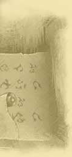

|  |
* При соответствующем козыре или в игре без козыря (обозначенной б/к). Игра в более старшей масти старше и в торговле побеждает. Игра без козыря старше козырной. 2.2.3. Смысл игры заключается в том, чтобы, оценив в каждой сдаче свою карту, заказать наилучший контракт и выиграть возможно большее количество очков. 2.2.4. Вся совокупность контрактов, образующих самостоятельную игру, называется пулькой. Такое же название носят: протокол, регистрирующий результаты каждого контракта; часть этого протокола, регистрирующая только результаты выигранных контрактов (другие части этого протокола называются гора и висты). 3. ХОД ИГРЫ3.1. Распределение мест между игроками3.1.1. Процедура розыгрыша мест за игорным столом называется «тираж» и происходит следующим образом: все игроки вытягивают из колоды по карте. Тот, кто вытянет самую младшую карту, выбирает место первым, остальные игроки рассаживаются вслед за первым в соответствии с вытянутыми картами. Если два игрока вытянули одинаковые по достоинству карты, то учитывается их масть: пика считается младшей мастью, затем следует трефа и бубна, а черва считается самой старшей. Туз при тираже, по традиции, считается самой младшей картой[9]. 3.1.2. Новый игрок (четвёртый при трёх уже играющих) может быть принят в игру только с согласия всех участников. При этом, вступая в игру, он записывает в пульку и гору среднее арифметическое от суммы очков в горе и пульке играющих. Все округления при записи делаются не в пользу новенького. Если новый игрок не замещает выбывшего, он занимает место по левую руку от только что сдававшего и становится сдатчиком в своей первой сдаче. 3.2. Раздача карт3.2.1. Первая сдача в пульке разыгрывается жребием, аналогично розыгрышу мест (правило 3.1.1)[10]. 3.2.2. Сдача всегда переходит к следующему игроку, независимо от того, какая игра игралась и была ли она сыграна. Игрок сдаёт повторно только в том случае, если сдача признана недействительной. Сдача переходит по кругу по часовой стрелке, т. е. к партнёру слева. 3.2.3. Сдающий должен тщательно пеpетасовать каpты, затем дать снять своему соседу справа. Положив оставшиеся каpты на снятые, он pаздаёт их. Любой из участников игры может попросить потасовать карты ещё – до того, как произошёл съём. Перед съёмом любой из игроков может попросить дать ему карты для тасования. Перетасовав, он возвращает их сдающему. 3.2.4. Если во время тасовки перевернётся или упадёт одна или несколько карт, карты следует тасовать ещё раз до съёма. 3.2.5. Съём колоды обязателен. 3.2.6. Съём следует делать на столе (не в руке сдающего), одной рукой, таким образом, чтобы в снятой или оставленной части колоды оказалось не менее четырёх каpт. Если съём произошёл с нарушением правил, то любой из игроков может попросить повторить тасование и съём. 3.2.7. Если же, при наличии более тpёх игpоков, снять должен игpок, котоpый в этот момент отлучился, то снять за него может его правый сосед, если, конечно, отлучившийся не оговоpил за собой снятие каpт после своего возвpащения[11]. 3.2.8. Сдают карты по две за раз, по часовой стрелке, начиная с левого партнёра. Каждому игроку сдают по десять карт в пять кругов. Две карты кладутся отдельно в прикуп. Прикуп желательно класть после первого круга сдачи, но в любом случае не первой и не последней парой карт[12]. 3.2.9. Если порядок сдачи нарушен, любой игрок может потребовать пересдачи. 3.2.10. Когда игpают четвеpо, сдающий себе каpт не сдаёт – он «сидит на прикупе»; пpи пятеpых и более игpоках игpают оба левых соседа сдающего и его пpавый сосед. 3.2.11. Тасовать и сдавать карты следует таким образом, чтобы никто не видел лицевую сторону карт. 3.2.12. Если пpи сдаче откpоется одна каpта по пpямой или косвенной вине сдающего, каpты пеpесдаются. 3.2.13. Если пpи сдаче произошла ошибка, т. е. если каpты оказались pозданы непpавильно по числу, или не в том порядке, или не в том количестве за раз, то они пеpесдаются заново, при условии, что ошибка была замечена до начала торговли. 3.2.14. Если карты сданы не в очередь, то в случае, если ошибка обнаружена до окончания сдачи, нужно пересдать. Если же сдача окончена и хотя бы один из участников игры поднял карты, сдача считается законной и игра продолжается своим чередом. Следующая сдача в этом случае принадлежит игроку, сидящему слева от сдавшего, – как если бы сбоя в очерёдности не было. 3.2.15. Карты следует пересдать в следующих случаях: – если хоть одна карта при сдаче или при съёме окажется перевёрнутой лицевой стороной кверху[13]; – если окажется недостаток карт в колоде; – если карты сданы без съёма и это упущение вовремя замечено – до окончания сдачи, пока никто своих карт не смотрел; – если карты сданы не в очередь и это упущение вовремя замечено: до окончания сдачи, пока никто своих карт не смотрел; – если нарушен порядок сдачи: не по часовой стрелке, или не в нужном количестве за раз (по две), или прикуп не был положен четвёртой парой карт[14], или другим традиционным образом; – если сдано не поровну карт[15]. 3.2.16. В отношении количества карт на руках в преферансе, как и во многих других карточных играх действует, единое правило: игрок сам отвечает за правильное количество карт у него на руках[16]. Мера ответственности предусмотрена правилом 3.9.18. Если неправильное количество карт у себя на руках обнаружено игроком до начала игры (торговли или розыгрыша), то он должен сразу заявить об этом. Если в неправильной сдаче не может быть усмотрено корыстного умысла, то карты нужно пересдать. Если умысел теоретически возможен, то игроку предоставляется право самому выбрать: нужно ли карты пересдать или, по своему усмотрению, отдать одну карту в ту руку, где карт недостаёт (естественно, если в этом случае не ущемляются интересы третьего игрока, который не сдавал карты и не может быть ответственным за чужую ошибку). Если налицо противоречие интересов, то весь возможный ущерб (равно как и упущенную выгоду) должен компенсировать сдатчик[17]. Если же игрок начал игру (торговлю или розыгрыш) с неправильным количеством карт на руках, он наказывается штрафом в размере максимального возможного для него выигрыша в данной игре. 3.2.17. Если сдатчик нарушит правило сдачи: начнёт тасовать после съёма, нарушит порядок сдачи и т. п., то мера взыскания за первую ошибку – замечание, а за вторую – условленный ремиз (например, пять в гору) и переход сдачи. 3.2.18. Все претензии по поводу ошибок или нарушений при тасовке карт или снятии колоды, или способа сдачи карт принимаются до окончания сдачи, а претензии по поводу очерёдности сдачи – до открытия своих карт хотя бы одним из игроков. 3.2.19. Если кто-либо из игpоков во вpемя или после правильно произведенной сдачи увидит пpикуп, он не имеет пpава пpинимать участия в тоpговле. Если в этой сдаче играется распасовка, нарушитель забирает первые две взятки (начинающиеся ходом с карты известного ему прикупа). Если по правилам игры прикуп на распасовке не открывается (например, играют в «ростовскую» разновидность[18]), в наказание за увиденный прикуп игрок должен забрать себе все десять взяток. Его партнёры в этом случае пишут висты пополам и в пулю по единичке, как если бы они не взяли взяток на распасовке[19]. 3.2.20. Тот, кто во время или после правильно проведенной сдачи взял себе прикуп, также не имеет права участвовать в торговле. В таком случае виновный должен перемешать свои 12 карт и дать сдающему вытянуть две из них, чтобы отложить их в прикуп. 3.2.21. Смотреть прикуп до его покупки не может никто, даже сдающий, не участвующий в игре. Наказанием за любопытство служит запись пяти очков в гору. 3.2.22. Каждый игрок обязан брать и держать свои карты таким образом, чтобы в них не мог заглянуть никто из других игроков (т. е. «ближе к орденам»). Считается некорректным позволять другим игрокам смотреть в свои карты. Точно так же заглядывание в чужие карты и подсматривание достойны осуждения со стороны других игроков. Правда, наказания за такое поведение не предусмотрено. 3.2.23. После окончания сдачи каждый участник обязан проверить правильность количества сданных ему карт и объявить о замеченной ошибке до своего вступления в торговлю. Любая заявка (в том числе и пас) считается вступлением в торговлю, после которого за неправильное количество карт на руках отвечает не сдатчик, а имеющий неправильное количество карт. 3.3. Тоpговля (аукцион, лицитация, переговоры)3.3.1. После того как все каpты pозданы, пpоисходит тоpговля: игроки конкурируют за право взять прикуп и назначить контракт. Возьмёт прикуп и назначит контракт тот, кто сделает в конкурентной торговле наивысшее назначение. 3.3.2. Первое слово в торговле принадлежит игроку, сидящему слева от сдатчика и называемому «первая рука». Дальше право сделать заявку переходит по часовой стрелке. Следующий игрок называется «вторая рука», третий – «третья рука». Для удобства принято также называть игроков сторонами света – Север (North), Юг (South), Запад (West), Восток (East). 3.3.3. В каждую очередь позволительно делать только одно назначение. 3.3.4. Контракт назначается из расчёта количества взяток, которые игрок сможет взять, если возьмёт прикуп и назначит козырь по своему усмотрению или игру без козыря. 3.3.5. Начинать переговоры можно с назначения не менее чем шести взяток. Заявляя о своей претензии на взятие прикупа и заказ контракта, игрок может сказать шесть пик, или пика, или просто раз[20]. 3.3.6. Следующий игрок может принять участие в торговле за прикуп и сказать шесть треф, или трефа, или просто два. 3.3.7. Торговлю в преферансе можно представить себе в виде лестницы, первая ступенька которой – 6пики, вторая – 6трефы, третья – 6бубны, четвёртая – 6червы, пятая – 6 без козыря, шестая – 7пики и т. д. до десяти без козыря. Игрок, сделавший одно из назначений в процессе торговли и взявший после этого прикуп (если оба его партнёра спасовали), может назначить тот контракт, до которого он доторговался, или любой другой, который находится на воображаемой лестнице выше той ступеньки, на которой он остановился. Исключение составляет контракт мизер, который можно заказать только сразу. Правило называется «кабальный мизер» (см. 3.3.9). 3.3.8. Назначения в процессе торговли нужно делать последовательно, не прыгая (пользуясь тем же сравнением) через ступеньки. Это правило существует для того, чтобы третий игрок, которому предстоит принять участие в розыгрыше, знал, до какой масти торговался каждый торгующийся. Той же цели служит правило, по которому игрок, находящийся на первой руке, может не увеличивать назначение, а сказать здесь или мои. Например, у первого игрока сильная масть бубна. Он открывает торговлю заявкой пика. Следующий игрок пасует, а третий говорит трефа. Первому игроку лучше сказать трефа здесь, а не говорить бубна: это даст ему возможность (если противник скажет бубна) сказать бубна здесь. Если он спасует после того, как противник скажет черва, партнёр будет знать, у кого сильная бубна. В противном случае (если он вместо трефа здесь скажет бубна, а противник назовёт черву, возьмёт прикуп и закажет, например, 7пики), будет непонятно, какая масть у первой руки – бубна или черва[21]. Недостаточная заявка исправляется на достаточную[22]. 3.3.9. «Мизер кабальный». Игра мизер не может быть заказана игроком, который участвовал в торговле любой заявкой. Желающий играть мизер должен объявить об этом своей первой заявкой. Если игрок успел сделать любую другую заявку, он теряет право заказать мизер. 3.3.10. Игрок, не желающий начинать или продолжать торговлю, говорит пас и лишается права на заказ какого бы то ни было контракта, т. е. на участие в дальнейшей торговле. 3.3.11. Ни одна заявка, сделанная в процессе торговли, не может быть взята назад. Игрок, сделавший значимую заявку, после которой партнёры спасовали, обязан взять прикуп и заказать контракт не ниже заявленного в торговле. 3.3.12. Если все игроки сказали пас, то играется распасовка, игра, в которой все стараются взять как можно меньше взяток. 3.3.13. Игpок, сделавший в процессе торговли самое высокое назначение, становится «игpающим» или «разыгрывающим». Он берёт прикуп и заказывает контракт. 3.3.14. Игрок, победивший в торговле и ставший разыгрывающим, имеет право взять и открыть прикуп самостоятельно. Никто, в том числе и сдающий, не должны открывать прикуп разыгрывающему иначе, как по его просьбе. 3.3.15. Если «первая рука» и «вторая рука» сказали пас, т. е. отказались от торговли, «третья рука» имеет право взять прикуп себе без каких-либо заявлений. Тем самым он обязуется объявить какой-либо контракт[23]. 3.3.16. Если один из игроков вольно или невольно увидел или взял прикуп до окончания торговли, он больше не имеет права участвовать в ней (см. правило 3.2.19). Если при этом был нанесён ущерб остальным игрокам, то поступают таким образом, чтобы компенсировать ущерб всем пострадавшим участникам игры за счёт нарушителя. 3.3.16.1. Если прикуп был увиден только одним нарушителем, то торговля продолжается своим чередом без участия нарушителя[24]. 3.3.16.2. Если прикуп был открыт на всеобщее обозрение, когда один из игроков ещё не закончил торговли, то прикуп отдаётся этому последнему, а последней заявкой торговли считается заявка этого игрока. Пример. Торговля: 6пики – пас – 6трефы. В этот момент первая рука, думая, что все спасовали, открывает прикуп. Зафиксировав факт нарушения, третья рука берёт прикуп себе и может назначить любой контракт не ниже 6трефы. 3.3.16.3. Если прикуп был открыт на всеобщее обозрение, когда два игрока ещё не закончили торговли (а открытый прикуп, разумеется, делает дальнейшее продолжение нормальной торговли невозможным), то все открывают свои карты и смотрят, какой контракт мог быть сыгран каждым неспасовавшим участником торговли при данном прикупе и раскладе. Результат возможного контракта записывается вистами на нарушителя. Пример. Торговля: 6пики – 6трефы – 6бубны. В этот момент первая рука открывает прикуп. Зафиксировав факт нарушения, все открывают свои карты и видят, что, если бы прикуп достался второй руке, был бы сыгран контракт 9червы, а если бы прикуп достался третьей руке, то контракт 6бубны пошёл бы без одной. Вторая рука пишет на нарушителя 52 виста (стоимость девятерной), а сдающий пишет на нарушителя 7 вистов (свою упущенную выгоду от возможного подсада третьей руки на шестерной)[25]. Нарушитель не пишет ничего. Если бы двое могли сыграть положительный контракт, то висты на нарушителя писали бы оба. 3.3.17. Если кто-либо из игроков случайно взял себе карты прикупа до окончания торговли, а другой желает объявить игру, первый должен перемешать свои 12 карт, а сдававший должен взакрытую вытянуть из них две и отложить в прикуп[26]. 3.3.18. Если игрок сделал заявку вне очереди, то он должен дождаться своей очереди. Наказания за внеочередную заявку не предусмотрено, если нарушитель стал разыгрывающим. Если же нарушитель стал противником разыгрывающего, то разыгрывающий может наложить запрет (или, наоборот, отдать приказ) ходить в объявленную масть[27] при первом попадании хода к партнёру нарушителя. 3.3.19. Заявки втёмную (т. е. не смотрев своих карт) допускаются только по предварительной договорённости между участниками игры[28]. Возможны следующие заявки втёмную: а) пас втёмную. В случае, если после такой заявки произойдёт распасовка, цена взятки будет двойная. Игрок, заказавший пас втёмную, если распасовка состоялась, получает бомбу[29], называемую также: птичка, ёлочка, рефет. Перебить пас втёмную можно только семерной игрой. Повторный пас втёмную снова удваивает все показатели: распасовка после него идёт по учетверённой цене, заработанная бомба даёт коэффициент 4[30], перебить повторный пас втёмную можно только восьмерной игрой. В дальнейшем увеличение показателей происходит в геометрической прогрессии, предел которой может быть установлен по предварительной договорённости. Сдатчик (при игре вчетвером) в случае распасовки также получает бомбу. Не получает бомбу только игрок, сказавший пас в светлую. При этом цена взятки на распасовке для него точно такая же, как и для темнивших игроков; б) раз втёмную (или любая другая значащая заявка, если торговля уже была открыта одним из игроков). Такая заявка может быть перебита обычной заявкой два или следующей по торговле. Темнящий может продолжать торговлю втёмную или посмотреть карты и продолжать торговлю на общих основаниях. Игрок, победивший в торговле втёмную, берёт прикуп, никому не показывая. Если он заказывает шестерную игру, противники обязаны вистовать втёмную, на других играх вист обычный. Цена выигрыша и проигрыша независимо от величины заказанной игры удваивается[31]. До взятия прикупа игрок, получивший право на игру после торговли втёмную, может изменить заказ и объявить мизер. В этом случае прикуп берётся в открытую и удваивающий коэффициент пропадает. Если игрок начал торговлю втёмную, а затем (в условиях конкурентной торговли) посмотрел свои карты, он может продолжить торговлю в светлую, но сыгранная им в этом случае игра будет считаться без повышающего коэффициента; в) мизер втёмную. Перебить эту заявку можно только девятерной втёмную или десятерной в светлую. Прикуп берётся втёмную и ловится «тёмный мизер» тоже втёмную, т. е. вистующие не открывают своих карт. 3.4. Заказ контракта3.4.1. Игрок, который в процессе переговоров сделал наивысшее назначение (поднялся на самую высокую ступеньку лестницы), получает право заказать контракт и называется разыгрывающим. Он открывает прикуп на всеобщее обозрение, берёт его себе, а две карты сносит по своему усмотрению, никому не показывая. После сноса разыгрывающий назначает контракт. 3.4.2. Разыгрывающий обязан заказать игру в любом случае, даже если не видит возможности выполнить назначение. 3.4.3. Разыгрывающий обязан заказать контракт не ниже того, до которого он дошёл в процессе торговли. 3.4.4. Если игрок делает заказ, противоречащий основным правилам (контракт ниже назначения, сделанного в торговле; мизер после участия в торговле другими заявками), партнёры должны указать ему на недопустимость его действий и предложить сделать заказ в соответствии с правилами. Если игрок не хочет изменить заказ, то ему засчитывается ремиз «без всех» в той игре, до которой он дошёл в процессе торговли. 3.4.5. Возврат прикупа и изменение заявок в торговле не допускаются. 3.4.6. Если игрок заказал контракт, имея на руках больше или меньше десяти карт, то он наказывается штрафом (ремизом) без двух на объявленной игре. Если при этом партнёры могут доказать, что и при правильном количестве карт на руках ремиз был неизбежен (при оптимальной игре всех участников в светлую), то штрафные две взятки плюсуются к тем, которых недосчитался бы разыгрывающий. Пример. Разыгрывающий заказал шестерную и не сделал сноса (или снёс три карты). Когда ошибка выяснилась, вистующие сумели доказать, что при правильном (т. е. лучшем для него) сносе разыгрывающий сидел бы без пяти. Записывают как за подсад без семи. 3.4.7. Заказ контракта, сделанный в соответствии с правилами, не может быть изменён, если хотя бы один из партнёров завистовал. Это относится и к ситуации, когда у разыгрывающего в назначенной козырем масти меньше трёх карт[32]. 3.4.8. Если разыгрывающий ошибся при заказе контракта, он может изменить назначение контракта, но только если он делает или пытается сделать это без паузы. Пример. Игрок заказал 6бубны и тут же поправился: разумеется, червей. Он имеет право заказать 6червы. Если же имела место пауза, но контракт не был завистован, то разыгрывающий может заказать контракт уровнем выше, т. е. 7червы. Если же контракт 6бубны был завистован, то играется 6бубны. Если было очевидно намерение исправить ошибку, т. е. торговля происходила так: 6бубны – Ой!–ой!–ой! – вист! – 6червы, то ошибка может быть исправлена. Разыгрывающему позволено заказать 6червы. 3.4.9. После заказа контракта изменения сноса не допускаются. После первого хода не разрешается также смотреть собственный снос[33]. Если разыгрывающий заглянет в снос после начала розыгрыша, то он наказывается штрафом в одну взятку. Если было набрано ровно объявленное количество взяток, то считается ремиз без одной. Если была взята лишняя взятка, то она не считается (взаимно уничтожается со штрафной)[34]. Если были взяты несколько лишних взяток, то одна отнимается. Если имел место ремиз, то штрафная взятка плюсуется к недобранным. Пример. Разыгрывающий заказал шестерную и в процессе розыгрыша заглянул в снос. Вистующие посадили разыгрывающего без одной. Записывается ремиз без двух. 3.4.10. Отказ от прикупа, по договорённости между игроками, может сулить наказание сдающему в виде условленного количества очков в гору. Однако для серьёзной игры (особенно в квалификационном турнире) это правило применять не желательно: никто не должен страдать из-за неумения класть в прикуп тузы[35]. 3.4.11. За взятку, данную разыгрывающему в прикупе, сдающий, по договоренности между игроками, пишет на разыгрывающего консоляцию[36] (премию, компенсацию) как за взятку на заказанной игре. За туза – как за одну взятку; за туза и короля одной масти – как за две взятки; за двух тузов – как за три взятки; за марьяж – как за одну взятку. Однако в серьёзной игре (особенно в квалификационном турнире) это правило, как и правило 3.4.10, применять не желательно: умение класть в прикуп тузы не должно вознаграждаться. 3.4.12. Совет постороннего переменить масть козыря, повысить или понизить заказ игры лишает права как на то, так и на другое. См. также правило 3.9.20 и комментарий к нему. 3.4.13. Понятия «недозаказ» (или, как его ещё называют, – «перезаклад») не существует[37]. 3.4.14. Контракта «преферанс» не существует[38]. 3.5. Игра на взятки3.5.1. Игрок, участвовавший в торговле любой значащей заявкой, кроме мизера, и взявший прикуп, заказывает контракт, в котором он обязуется взять определённое количество взяток при заказанном им козыре или без козырей. Все контракты, в которых разыгрывающий стремится взять взятки (в отличие от контракта мизер и распасовки), условимся называть играми на взятки. 3.5.2. При игре с козырем одна из четыpёх мастей всегда становится козыpной. Любая карта козырной масти старше любой карты другой масти. Между картами козырной масти сохраняются те же иерархические отношения, которые существуют для всех мастей (правило 1.3.3). Остальные масти в козырной игре pавноценны. 3.5.3. Все игры на взятки разыгрываются в случае, если завистованы. Не составляет исключения и десятерная игра[39]. О правилах вистования см. 3.8. 3.5.4. Игрок, взявший прикуп, не может «сдаться без боя», иначе как признав, что остался «без всех», и должен играть завистованную игру до конца. Правило «без трёх без вистов»[40] не действует. 3.6. Мизер3.6.1. Контракт, в котором заказавший его обязуется не взять ни одной взятки, называется мизером. 3.6.2. В отличие от существовавших в архаичных разновидностях большого и малого мизера, а также большого и малого увёрта (мизера на открытых картах) все современные разновидности преферанса знают только один вид мизера. 3.6.3. Мизер кабальный. Правило 3.3.9 разъясняет возможность заказать мизер только в том случае, если игрок не делал других заявок в процессе торговли. 3.6.4. Если один из игроков заказал мизер, перебить это назначение может только девятерная игра[41]. 3.6.5. В «классике», признающей игры втёмную, есть правило: мизер, заказанный втёмную, ловится втёмную. Прикуп при «тёмном» мизере берётся также взакрытую (не показывается). 3.6.6. В современных разновидностях преферанса мизер играется следующим образом: объявивший мизер игрок (если никто не перебил его назначения девятерной игрой) открывает обе карты прикупа на всеобщее обозрение. Потом прикуп берётся в руку, откуда сносятся две любые карты. Снос никому не показывается. Если ход принадлежит разыгрывающему, он должен сделать его до того, как противники «лягут» – откроют карты. Если первый ход принадлежит вистующим, они открывают карты до первого хода. 3.6.7. Козырей на мизере не существует. Старшинство карт сохраняется, равно как и все основные правила преферанса: на ход в масть обязательно давать в масть, ход принадлежит игроку, взявшему последнюю взятку, и т. д. 3.6.8. Вистующие на мизере могут записать расклад. Это является исключением только для игры мизер, так как во всех остальных играх пользоваться средствами записи, калькуляторами, компьютерами, а также мнемотехническими предметами не разрешается. 3.6.9. Игрок может пригласить сдающего (сидящего на прикупе и не участвующего в игре) играть с ним мизер пополам[42], при условии, что последний не видел карт других игроков. В этом случае он передаёт прикупщику свои карты и говорит: «Приглашаю». Прикупщик, посмотрев карты, должен лаконично согласиться разделить риск или отказаться. В случае согласия, компаньоны объявляют мизер, выигрыш и проигрыш пишется пополам[43]. Споров между компаньонами при возникновении проблемных ситуаций не допускается. Формально разыгрывающим считается игрок, которому были сданы карты. Отказ от прикупа (правило 3.4.10) не допускается[44]. 3.7. Распасовка3.7.1. Если все три игрока не вступили в торговлю (заявили пас) то играется распасовка – игра, в которой все игроки стараются взять как можно меньше взяток (см. 3.3.12). 3.7.2. В различных разновидностях преферанса результаты распасовки записываются по-разному: в гору или в вистовую запись. Игроки должны условиться перед началом игры о том, в какую разновидность они играют и как будет происходить распасовка. 3.7.2.1. В «сочинке», «ленинградке» и «классике» за каждую взятку, взятую на распасовке, игрок пишет определённое количество очков в гору[45]. Игрок, не взявший ни одной взятки, пишет в пульку стоимость одной взятки. 3.7.2.2. В «ростовской» (или, как её ещё называют, «московской») разновидности преферанса игрок, взявший на распасовке взяток меньше всех остальных участников игры, пишет условленное количество вистов на своих партнёров за каждую взятую ими взятку. В наиболее распространенном варианте это пять вистов за взятку. Игрок, не взявший ни одной взятки, пишет в пульку одно очко. Если минимальное количество взяток набрали два игрока, они пишут висты на третьего пополам. Пример. Один игрок взял шесть взяток, а два других – по две. Они оба пишут на первого по 15 вистов (всего тот проиграл 30). 3.7.3. Амнистия. Если запись за распасовку идёт в гору, то после окончания розыгрыша производится амнистия, т. е. сокращение записи на одинаковое для всех количество взяток. Амнистия производится для упрощения счета и сокращения числа записей[46]. Пример. Один игрок взял четыре взятки, а два других – по три. Амнистия производится на три взятки. Первый игрок пишет в гору за одну взятку, а двое других не пишут ничего. При игре вчетвером амнистия производится с учётом количества взяток, полученных сдатчиком из прикупа. Если сдатчик не взял ни одной взятки, количество взяток, на которое может быть сокращена запись, равно нулю. 3.7.4. Прогрессирующая распасовка. Если распасовка случается несколько раз подряд, то, по предварительной договоренности между игроками, цена за одну взятку может увеличиваться от распасовки к распасовке. Это увеличение стоимости взятки на распасовке может происходить в арифметической или в геометрической прогрессии. 3.7.4.1. Арифметическая прогрессия предполагает увеличение стоимости на определенную величину, например, на одно очко. При такой прогрессии за взятку на первой распасовке пишут в гору по единичке, на второй – по двоечке, на третьей – по три очка. 3.7.4.2. Геометрическая прогрессия предполагает увеличение стоимости взятки от распасовки к распасовке в определенное количество раз. При такой прогрессии за взятку на первой распасовке пишут в гору по единичке, на второй – по двоечке, на третьей – по четыре очка. 3.7.4.3. Предметом особой предварительной договорённости между игроками должен быть предел прогрессии. Рекомендуется устанавливать предел в три шага: например, договариваются так: прогрессия арифметическая, за взятку на распасовке 1–2–3, дальнейшего увеличения не происходит, все последующие распасовки играются по три очка за взятку. Разумеется, игроки могут установить другой предел или оговорить неограниченную прогрессию. 3.7.5. Козырей на распасовке не существует. Давать в масть обязательно. При отсутствии масти можно нести любую карту. 3.7.6. Прикуп на распасовке. 3.7.6.1. При игре вчетвером распасовка начинается с того, что сдающий открывает первую карту прикупа. Это его первый ход. Все игроки обязаны давать в масть. Первым кладёт карту игрок, сидящий слева от сдатчика. Самая старшая карта масти забирает взятку. Следующий ход также делается из прикупа. Снова первым кладёт карту игрок на первой руке – независимо от того, кто взял предыдущую взятку. Третий ход делает игрок, на первой руке. В дальнейшем ход принадлежит тому, кто взял последнюю взятку. 3.7.6.2. Предыдущее правило справедливо для всех разновидностей, в которых распасовка играется на гору. В «ростовской» разновидности (распасовка на висты) прикуп в игре не участвует и две карты остаются неизвестными до конца розыгрыша. Сдающий пишет себе единичку в пульку за ноль взяток. 3.7.6.3. При игре втроём так же последовательно открываются карты из прикупа, но с той лишь разницей, что достоинство карты прикупа не имеет значения, она только указывает масть хода; взятку возьмет тот из игроков, чья карта окажется старшей из трёх, положенных игроками. Пример. Из прикупа открыт туз пик[47]. Игроки дали во взятку девятку, семерку и восьмерку. Взятку берет тот, кому принадлежит девятка. Все остальные правила те же, что в 3.7.6.1. 3.7.6.4. При игре в «гусарика» (вдвоём) прикуп на распасовке не открывается во всех разновидностях преферанса[48]. 3.7.7. Скользящая распасовка. После распасовки сдача переходит к следующему игроку по кругу (по часовой стрелке). Это правило называется «распасовка скользящая». В противоположность скользящей распасовке существует правило в «классике», по которому после распасовки сдачу повторяет предыдущий сдатчик. Это правило объясняется тем обстоятельством, что в «классике» можно заработать «бомбу», т. е. коэффициент повышения стоимости для следующей игры, заявив пас втёмную. Второй подряд пас втёмную сулит двойную бомбу и т. д. Выйти из распасовки после паса втёмную можно семерной игрой, а из двойной распасовки – восьмерной и т. д.[49] В современной же «гладкой» пуле (особенно при проведении квалификационного турнира) необходимо, чтобы распасовка была скользящей. 3.7.8. Выход из распасовки (как одинарной, так и любой другой) осуществляется шестерной игрой. Правило, по которому после распасовки можно заказывать игру не ниже семерной, существовало в «классике» и привносит в игру преферанс элемент азарта и увеличивает значение случая. Поэтому его не следует применять в квалификационных турнирах. 3.7.9. В «классике» перед началом игры обычно играют условленное число кругов распасовки, для того, чтобы все игроки заработали соответствующее числу распасовок количество бомб[50]. Распасовки, предваряющие игру, являются принудительными. Считается, что все игроки сказали пас втёмную. 3.7.10. В «классике» в процессе игры можно заработать бомбу заявкой пас втёмную, если за этой заявкой хотя бы одного игрока последует распасовка. Подробнее о заявках втёмную см.правило 3.3.19. 3.8. Вист3.8.1. После того как заказан контракт, следующий за разыгрывающим игрок должен сказать, обязуется ли он взять обязательное для данной игры количество взяток (см. 3.8.2)[51], как правило, равное разности от вычитания величины заказанной игры из числа десять[52]. Если обязуется, он говорит вист, а если не обязуется, говорит пас. Игрок, сделавший заявку вист, называется «вистующим». 3.8.1.1. За набранные взятки вистующий пишет условленное количество очков[53] в графу «висты». 3.8.1.2. При ремизе разыгрывающего вистующий пишет дополнительно консоляцию[54] за каждую недобранную разыгрывающим взятку. Консоляцию обычно пишут все игроки, включая сдающего. 3.8.1.3. При ремизе вистующего[55] он пишет висты за фактически набранные взятки, а за недобранные – в гору. Размер записи в гору определён в правилах 3.8.11 и 3.8.12. 3.8.2. Обязательное для вистующих количество взяток: при контракте 6 – четыре взятки, при контракте 7 – две, 8 – одна, 9 – одна, 10 – одна, мизер – для вистующих нет обязательств. 3.8.3. Третий игрок может тоже вистовать или пасовать независимо от того, вистует или пасует предыдущий. 3.8.4. Если завистовали оба противника разыгрывающего, то они вместе должны взять обязательное для данной игры количество взяток. Розыгрыш контракта в этом случае происходит втёмную. 3.8.5. Если завистовал только один, он решает, будет ли розыгрыш контракта происходить втёмную или в светлую: в последнем случае он предлагает пасовавшему партнёру положить карты на стол и распоряжается ходами с обеих рук единолично. И ответственность[56] за взятие обязательного количества взяток несёт он один. В случае, если по решению вистующего игра будет происходить в светлую, вистующие должны положить карты на стол до первого хода независимо от того, кому принадлежит право первого хода – разыгрывающему или одному из вистующих[57]. Исключение сделано для игры мизер, в которой вистующим даётся преимущество: при своём ходе они ложатся сразу, а при ходе мизерящего тот должен сделать первый ход втёмную (правило 3.6.6). 3.8.5.1. Если план розыгрыша, предлагаемый вистующим, не поддерживается пасующим (или сдатчиком), то ситуация может быть разрешена одним из описанных ниже способов в зависимости от того, встретилась ли спорная ситуация в коммерческой пульке или в квалификационном турнире: а) коммерческая пулька. Игрок, настаивающий на своём плане розыгрыша (и уверенный в его правильности) предлагает несогласным либо принять его план, либо позволить ему записать определённый результат в вистах независимо от результата розыгрыша при условии его неучастия. Со своей стороны он должен предложить аналогичные условия, если розыгрыш будет доверен ему. Пример. Играется мизер. Мнения вистующих разошлись. Игрок А предлагает игроку Б и сдатчику, что он будет ловить по своему плану и при любом исходе гарантирует результат «без одной». Игрок Б и сдатчик соглашаются. Игрок А «выпускает» мизер. Разыгрывающий пишет десять в пулю. Игрок Б и сдатчик, которые проиграли на этом по 25 вистов и недополучили по 25 вистов выигрыша в случае ремиза разыгрывающего (который был бы неминуем при их плане розыгрыша), пишут на игрока А по 50 вистов компенсации; б) квалификационный турнир. До начала розыгрыша к столу приглашается судья, до сведения которого доводятся разногласия между игроками. Судья должен дать возможность вистующему привести в исполнение собственный план, а несогласному пасующему (или сдающему) присудить компенсирующий результат (который был бы получен, если бы розыгрыш шёл по другому плану)[58]. Разыгрывающему в этом случае присуждается (по жребию) один из результатов, полученных при том или ином плане розыгрыша. 3.8.6. Если завистовали оба, то каждый отвечает за взятие половины от обязательного количества взяток. Если вистующие в сумме набрали меньше обязательного количества взяток, то материальную ответственность несёт (пишет в гору) каждый, кто набрал меньше половины обязательного количества взяток. Примеры. 1. Заказано 6бубны. Завистовали оба. Первый взял две взятки, а второй – одну. Второй пишет в гору за недобор взяток на висте (без одной). 2. Заказано 6бубны. Вистуют двое. Разыгрывающий взял девять взяток. Тот, кто взял одну взятку, пишет на гору за подсад без одной; тот, кто не взял ни одной взятки, пишет в гору за подсад без двух. На контрактах 8, 9 и 10 взяток за недобор взятки отвечает второй из последовательно завистовавших. Пример. Заказано 8бубны. Завистовали оба. Разыгрывающий взял десять взяток. В гору за подсад без одной пишет тот, кто завистовал вторым[59]. 3.8.7. Если сидящий следующим за разыгрывающим сказал пас, то второй может «уйти за полвиста», т. е. признать контракт сыгранным и без розыгрыша записать за половину от обязательного количества взяток[60]. 3.8.8. После того как второй сказал полвиста, спасовавший партнёр имеет право вернуть вист, завистовать. При игре вчетвером право вернуть вист принадлежит также и сдатчику, который может посмотреть в карты одного из противников разыгрывающего. Право это принадлежит сдатчику в последнюю очередь, т. е. один говорит пас, второй говорит полвиста, первый снова говорит пас и только тогда спрашивают у сдатчика, не пожелает ли он вистовать. 3.8.8.1. Право вернуть вист у спасовавшего на первой руке существует только на шестерной и семерной играх, где существует возможность ухода за полвиста. На восьмерной и более старших играх после двух пасов право завистовать сохраняется только у сдатчика. 3.8.8.2. После возврата виста любым из партнёров (спасовавшим ранее или сдатчиком) уходивший за полвиста теряет право вистовать. Его единственная заявка после возврата виста – пас. 3.8.9. Обязательных для вистования игр не существует[61]. 3.8.10. Пpи открытом висте вистующие должны откpыть все свои десять каpт до розыгрыша таким образом, чтобы карты были хорошо видны, сгруппированы по мастям и по порядку. Если это не так, любой игрок имеет право переложить карты как следует. 3.8.11. Ответственный вист. Если недобор вистующими взяток до обязательного их количества наказывается ремизом в полном объёме, т. е. в размере стоимости игры за каждую недобранную взятку, то такой вист называется ответственным. Ответственный вист характерен для «сочинки». В «классике» вист, по договорённости, становится ответственным после того, как закрыта пуля. 3.8.12. Полуответственный вист. Если недобор вистующими взяток до обязательного их количества наказывается ремизом в половинном объёме, т. е. в размере половины стоимости игры за каждую недобранную взятку, то такой вист называется полуответственным. Полуответственный вист характерен для «ленинградки» и «ростова», а также для «классики» (до того момента, когда пуля закрыта). 3.8.13. Вист жлобский. Существует совокупность договорных условий о правилах виста, характеризуемых как жёсткие, называемая жлобским вистом. В случае ремиза разыгрывающего висты пишутся только вистующим, если один из игроков сказал пас, а пасующий пишет только за безвзятие; при двух вистующих каждый пишет за себя – и висты, и ремизы. Характерен для «сочинки». Является предметом предварительной договорённости между игроками. 3.8.14. Вист джентльменский. Существует совокупность договорных правил виста, характеризуемых как мягкие, называемая джентльменским вистом. В случае ремиза разыгрывающего висты пишутся пополам, если один сказал вист, а другой – пас; можно на первой руке сказать вист, а если второй партнёр спасовал, уйти за полвиста (в свою очередь, пасовавший имеет право вернуть вист); уходивший за полвиста вистов при ремизе разыгрывающего не пишет; при двух вистующих каждый пишет за себя – и висты, и ремизы. Общая характеристика игры при джентльменском висте – поощряется игра в светлую, полезно говорить пас на первой руке. Характерен для «ленинградки». Является предметом предварительной договоренности между игроками. 3.8.15. Пригласительный вист. Устаревшее правило гласит, что вистующий мог «пригласить» спасовавшего партнёра поддержать игру против разыгрывающего (втёмную или в светлую), а мог «идти один». Карты спасовавшего в этом случае в игре не участвовали, а вистующему было достаточно взять половину от обязательного количества взяток. В настоящее время правило трансформировалось в правило «полвиста» (правило 3.8.7). 3.8.16. «Азбучные» правила вистования[62] носят рекомендательный характер, их нарушение не наказывается. 3.9. Розыгрыш3.9.1. Первый ход принадлежит игроку, сидящему слева от сдатчика, в дальнейшем – игроку, взявшему последнюю взятку. 3.9.2. Ходят всегда одной картой. 3.9.3. На ход в масть игрок обязан класть масть. Если масти нет, нужно бить козырем. Если нет ни масти, ни козыря, можно сносить любую карту. 3.9.4. Карта, побившая другие карты или не побитая другими картами, берёт взятку. Игрок, которому принадлежала эта карта, берёт взятку себе. Другими словами, взятка принадлежит тому игроку, который при правильном розыгрыше: – положил карту высшего достоинства в разыгрываемой масти; – положил карту масти, на которую другие игроки не ответили ни той же мастью, ни козырем; – побил разыгрываемую масть козырем; – перебил козыря, положенного в ответ на разыгрываемую масть, высшим козырем; – при заходе в козыря положил наивысшего козыря; – зашёл в козыря и получил в ответ карты обычных мастей. 3.9.5. Каждая взятка состоит из трёх карт, по одной от каждого игрока. Взятка считается завершённой, когда на стол выложена её третья карта. 3.9.6. Каждый игрок должен забирать свои взятки сам. 3.9.7. Взятки следует забирать таким образом, чтобы каждый из игроков мог отчетливо видеть все её карты, включая последнюю. 3.9.8. Любой игрок может потребовать показать ему последнюю закрытую взятку. После того как сыграна и закрыта очередная взятка, предыдущая перестаёт быть последней и смотреть её не имеет права никто, даже её владелец. 3.9.9. Все взятки складываются аккуратно и по порядку так, чтобы их можно было проверить вплоть до окончания партии. 3.9.10. Если кто-либо берёт несколько взяток подряд, не забирая их, то любой из игроков может потребовать перевернуть предыдущие взятки. 3.9.11. За несвоевременное и противоречащее правилам открытие взяток назначается наказание. 3.9.11.1. Если игрок просит партнёра показать ему взятку и просьба эта противоречит правилу 3.9.8, т. е. относится не к последней взятке, партнёр должен указать ему на существование правила 3.9.8. Однако он имеет право выполнить просьбу, если никто из остальных участников игры не возражает. 3.9.11.2. Если игрок самовольно открывает и смотрит чужую взятку либо свою, но не последнюю, то он лишается одной своей взятки, независимо от того, является он разыгрывающим или вистующим. На распасовке он пишет за одну лишнюю (как бы одиннадцатую) взятку. На мизере соответственно также добавляется одна взятка. 3.9.12. Понесённое одним из игроков наказание, предусмотренное правилом 3.9.11.2, не должно нанести ущерба другим игрокам. Так, например, если правило нарушил вистующий, его штрафная взятка не становится собственностью разыгрывающего (см. также комментарий к правилу 3.4.9). 3.9.13. Как игрокам, так и болельщикам запрещается считать вслух количество козырей или взяток во время игры. 3.9.14. Открытая карта. Если карта снесена не в очередь, то она признаётся «настольной», или «открытой», или «штрафной» и должна лежать на столе «до востребования»[63]. Нарушитель обязан сыграть открытой картой при первой возможности, если только противник не запрещает этого (при ходе нарушителя противник не может запретить ходить открытой картой). Естественно, ходы должны быть сделаны по правилам преферанса (в масть), и если противник просит ходить другой картой в данную масть, а других карт масти уже нет, то во взятку кладётся открытая карта. Это правило относится ко всем открытым картам (если их несколько) и является универсальным: открытые карты нельзя больше брать в руки. Последовательность игры открытыми картами, если их больше одной, выбирает противник нарушителя. Существует некоторая разница между случаями, когда ход не в свою очередь сделал разыгрывающий, вистующий или участник распасовки. В одних случаях можно усмотреть злой умысел и ущерб партнёрам (и, следовательно, нарушение должно быть наказано), а в других – ущерб нанесён только самому нарушителю. Соответственно наказание за открытую карту может отличаться, в зависимости от ситуации: 3.9.14.1. Открытая карта на висте. Если ход не в очередь допустил вистующий, то в этом его действии можно усмотреть нелегальную передачу информации партнёру. В этом случае открытая карта должна быть сыграна при первой возможности (при ходе в эту масть), но на второго вистующего налагается запрет хода в эту масть или, наоборот, отдаётся приказ – ходить в эту масть. Запрет или приказ даёт разыгрывающий – по своему усмотрению[64]. Разыгрывающий может также принять ход не с той руки, т. е. не исправлять допущенной ошибки. 3.9.14.2. Если ход не в очередь допустил разыгрывающий, он нанёс ущерб главным образом себе – показал одну из своих карт. Однако, он мог нанести ущерб и вистующим, если бы его ошибка осталась незамеченной. Наказание – игра настольной картой по требованию любого из вистующих. Запретить разыгрывающему ходить открытой картой, когда ход принадлежит разыгрывающему, вистующие не могут. 3.9.14.3. Если ход не в очередь сделан на распасовке, то все взятки после нарушения забирает нарушитель[65]. Если даже и в этом случае любой из участников распасовки считает, что ему был нанесён ущерб (и может это доказать), то ущерб должен быть целиком компенсирован нарушителем. Пример. Играется распасовка на висты («ростов»). Игрок А взял две взятки, а игрок Б – одну. В этот момент игрок В делает ход не в очередь и получает в виде наказания оставшиеся семь взяток. Игрок Б выигрывает распасовку и пишет на А и В по 10 и 35 вистов соответственно. Игрок А просит всех открыть карты и указывает на то, что при отсутствии нарушения была возможна некоторая последовательность ходов (на противоречащая здравому смыслу), при которой он не брал бы больше взяток, а игроки Б и В набрали бы по 4 взятки. В этом случае игрок А выиграл бы 40 вистов, вместо того, чтобы проиграть 10. Таким образом, нарушение нанесло игроку А ущерб в размере 50 вистов. Решение. Запись Б сохраняется. Игрок А записывает 50 вистов на игрока Б в виде компенсации ущерба. 3.9.14.4. Показ карт до окончания розыгрыша. Если игрок открывает карты, считая остальные взятки неотъемлемыми, и не сообщает план розыгрыша, ведущий к объявленному результату, то противник или противники вправе объявить все показанные карты «открытыми» и назначить последовательность ходов по своему усмотрению. Единственное ограничение – план розыгрыша, предложенный противником, не должен быть абсурдным (из-под тузов и т. п.). Открывая свои карты без объявления плана розыгрыша, разыгрывающий как бы даёт понять, что намерен взять все оставшиеся взятки при любом раскладе и любой последовательности ходов. Если можно доказать возможность получения вистующими хотя бы одной взятки в дальнейшей игре, вистующие могут заставить разыгрывающего ходить картами в той последовательности, которая им выгодна, за исключением нелогичной (т. е. все карты признаются открытыми, или настольными). На мизере такой показ означает, что разыгрывающий намерен не взять ни одной взятки. При объявленном плане розыгрыша вистующие также могут заставить разыгрывающего ходить, но лишь в соответствии с изложенным планом разыгрывающего. 3.9.14.5. Ни одна карта, находящаяся в сыгранной взятке[66], не может быть объявлена настольной. То есть обнаруженная «задним числом» ошибка в очерёдности хода не наказывается, взятка не переигрывается. В дальнейшем ход принадлежит тому, кто взял последнюю взятку. 3.9.15. Карта признаётся «открытой», или «настольной», в следующих случаях: – при ходе не в очередь; – при исправлении фальшренонса (см. правило 3.9.16); – если игрок открыл карты, имея в виду, что возьмет все оставшиеся взятки; – если игрок показал карту другому игроку, не выпуская её из рук. 3.9.16. Фальшренонс. Если при заходе в какую-либо масть или в козыря игрок положил во взятку карту другой масти, хотя у него была карта данной масти, или не побил козырем при наличии козыря и отсутствии масти хода, такое нарушение правил называется фальшренонсом и наказывается следующим образом: 3.9.16.1. Вовремя[67] замеченный и исправленный фальшренонс наказывается тем, что неправильно выложенная карта становится открытой (см. правило 3.9.14). 3.9.16.2. Если фальшренонс замечен не сразу, а в ходе дальнейшего розыгрыша, минимальное наказание виновному – штраф в одну взятку. Карты, сыгранные после фальшренонса разбираются и разыгрываются снова, при этом все разночтения толкуются в ущерб виновному[68]. Штрафная взятка становится собственностью противников. 3.9.17. Правом рекламации, т. е. указания на имевший место фальшренонс, игроки могут воспользоваться только до окончания розыгрыша. После того как карты смешаны для тасования и сделана запись, рекламации не принимаются и игра считается сыгранной (или не сыгранной) в соответствии со сделанной записью. 3.9.18. Если у кого-либо из игроков, несмотря на правильную раздачу карт[69], в ходе игры оказалось больше или меньше карт, чем у других игроков, будь то в результате сноса не двух, а большего или меньшего числа карт в прикуп, в результате «двойного» хода или пропуска хода, или по иным причинам, то виновному записывается штраф в размере максимально возможной упущенной выгоды остальных игроков. Заказавший игру ставит ремиз по меньшей мере без двух (даже если он выигрывал контракт). Более высокий штраф назначается в том случае, если вистующие уже набрали такое количество взяток, которое гарантирует более высокий ремиз, или вистующие могут доказать, что непременно набрали бы такое количество взяток, если бы игра шла правильно. Примеры. 1. Разыгрывающий контракт 6червы обнаружил, что у него осталось больше или меньше карт, чем у вистующих (предполагается, что у вистующих изначально было по десять). Он доигрывает игру до конца (лишние карты за взятки не считаются) и от набранного количества взяток отнимает две. Если он взял шесть взяток, то пишет за четыре; если взял четыре взятки, пишет за две. Если взял восемь взяток, то пишет всё равно за четыре – т. е. без двух. Вистующие пишут висты за фактическое количество взяток и консоляцию – за фактический подсад, без учёта штрафных взяток[70]. 2. Вистующий обнаружил недостаток или излишек карт на руках в процессе розыгрыша. Независимо от причин (карта упала под стол, карты были неправильно розданы, карты слиплись и в какую-то взятку были положены две вместо одной, был пропущен ход и т. п.), если только можно доказать, что именно у этого игрока неправильное количество карт, а у других – правильное, виновный наказывается ремизом «без двух» (в данном случае – на висте). 3. У двух игроков неправильное количество карт: у одного одиннадцать, а у другого девять. Причём, один является разыгрывающим, а другой – вистующим. Наказываются оба: один – без двух на игре, другой – без двух на висте[71]. 3.9.19. В процессе розыгрыша не разрешается задавать вопросов или каким-то образом комментировать ход розыгрыша. Единственным исключением из правила о недопустимости каких бы то ни было замечаний и вопросов в процессе розыгрыша является просьба подтвердить ренонс. Если партнёр сносит не по масти, допустимо спросить у него, действительно ли у него нет карт требуемой масти. Это исключение объясняется, во-первых, крупным штрафом за фальшренонс, а во-вторых, невозможностью восстановить нормальное течение игры после нескольких последовавших за фальшренонсом ходов. 3.9.20. Совет постороннего – с чего ходить или что сносить – даёт право ближайшему противнику назначить ход или снос по своему усмотрению[72]. 3.9.21. Нарушение правил или очерёдности хода в последней взятке несущественно и не наказывается. 3.9.22. Окончание без доигрывания. В принципе следует доигрывать каждую игру до конца. Однако игроки имеют право признать объявленный контракт сыгранным или проигранным и отказаться от розыгрыша по всеобщему согласию. 4. ПОДСЧЁТ РЕЗУЛЬТАТОВ4.1. Стоимость игр4.1.1. В пункте 2.2.2 приведены цены всех возможных контрактов, т. е. каждой игре соответствует некоторое количество очков, которое игрок пишет в пульку при реализации контракта или в гору – за каждую недобранную взятку при ремизе, а также на висте за каждую взятую или недобранную взятку. Однако цена контракта не всегда отражает стоимость игры, т. е. баланс выигранных и проигранных вистов. Между тем каждая игра имеет свою неизменную стоимость в вистах. Стоимость одной и той же игры различаться в разных видах преферанса, но должна быть единой в пределах длительности одной пульки. Все договорные правила, признаваемые в отдельных компаниях, но нарушающие этот принцип, должны быть, по возможности, пересмотрены. Пример. До окончания пульки осталось два очка. Игрок сыграл девятерную. Он пишет в пулю недостающие два очка и должен распорядиться оставшимися шестью очками. Их следует списать с горы, даже если запись в горе примет отрицательное значение. Нарушение принципа неизменности стоимости игры можно усмотреть в таких альтернативных решениях: а) оставшиеся очки пропадают; б) оставшиеся очки записываются на остальных участников игры вистами – скажем, на каждого из трёх партнёров пишется по 20 вистов. Неправильно! При расчёте пульки шесть очков с горы будут стоить каждому не по 20, а по 15 вистов, так как гора делится на всех участников игры, включая и её «владельца»; в) оставшиеся очки списываются с горы при игре в «гусарика» с неделимой горой. С горы следует списать лишь половину «не поместившихся в пулю» очков. 4.1.2. При использовании повышающих коэффициентов в игре (тёмные, бомбы, рефеты, ёлочки, птички и т. п.) стоимость сыгранной (как и не сыгранной) игры возрастает пропорционально коэффициенту. Таким же непредсказуемым образом возрастает стоимость игры при игре с призами (так называемыми «скачками») – за то, что первым закрыл пулю и т. д. При проведении квалификационных турниров следует избегать разновидностей, предусматривающих такие коэффициенты и скачкообразные изменения стоимости игр[73]. 4.1.3. Окончательный счёт в сыгранной пульке определяется в вистах. При проведении турниров критерием победы является наибольшая сумма набранных вистов. Организаторы могут, безусловно, вводить любые другие критерии, как то: наибольшее количество выигранных распасовок или минимальное совокупное количество взяток на всех распасовках, наименьшее количество ремизов или взяток на мизерах и т. п., но определяющей и главной должна быть разница в вистах. 4.2. Игровая запись (пулька)4.2.1. Результат каждой игры заносится в игровой протокол, расчерченный традиционным образом и известный как «пулька». Место для записей результатов игр должно иметь три графы: – горка для записи ремизов; – пулька для записи сыгранных контрактов; – вистовые записи (графа разделена на две или три секции, соответствующие количеству остальных игроков). За сыгранный контракт его цена (см. правило 2.2.2) пишется в графу «пулька». За несыгранный контракт (ремиз) запись делается в «гору» – цена контракта умножается на количество недобранных взяток. Вистующие пишут за свои взятки в графе «висты», в той её части, которая относится к разыгрывающему. В случае ремиза вистующих (недобора до обязательного количества взяток), вистующие пишут в гору цену контракта, помноженную на каждую недобранную взятку. 4.2.2. Величина игры и ставки являются предметом предварительной договорённости между игроками. Играют до определённого числа очков в графе «пулька». Например, пулька до 50 очков. 4.2.3. Каждый игрок пишет за сыгранные контракты в графе «пулька» нарастающим итогом до тех пор, пока сумма его очков не достигнет условленной, например, 50. После этого он «помогает» тому из противников, чья запись в пульке больше. За каждое очко, записанное противнику «в помощь», игрок пишет на него десять очков в графе «висты». Если у двух противников запись в пульке одинакова, то помогают тому, кто сидит слева[74]. Если игроки сообща решили прекратить игру, каждый пишет на гору недоигранное до условленного количество очков (это можно сделать только при согласии всех участников игры). Как только запись в пульке у всех игроков достигнет условленной, игра окончена. 4.2.3.1. Для оказания помощи несущественно, что игрок, которому адресована помощь, вистовал и поставил в гору ремиз либо сидел на прикупе и в игре не участвовал[75]. 4.2.3.2. Независтованные контракты, равно как и завистованные, не списываются с горы, а записываются исключительно в графу «пулька» – либо самому разыгрывающему, либо тому игроку, которому, по условиям игры, предназначается помощь[76]. 4.2.3.3.В «ленинградской» разновидности преферанса («ленинградке») «помощи» нет, переигранные очки при расчёте списываются с горы вдвойне, а недоигранные очки выносятся на гору – также вдвойне. Пример. Играют втроём пульку до 50. Один из игроков, имея в пуле 48, сыграл восьмерную. Он делает полную запись в пулю – 54. Игра происходит до тех пор, пока суммарная запись в графе «пуля» у всех игроков станет равной или превзойдёт 150. В этот момент пулька считается сыгранной и при расчёте сыгранные сверх необходимых 50 очки списываются с горы вдвойне, а недоигранные до 50 – выносятся вдвойне на гору. Допустим, в рассматриваемый нами момент у всех троих было в пуле по 48. После сыгранной восьмерной игра закончилась: у двоих осталось в пуле по 48, а у третьего стало 54. Этот последний списывает с горы восемь очков, а двое его партнёров приписывают по четыре. Если суммарная величина записей всех игроков превзошла 150, это ничего не меняет: результат любой игры пишется полностью. То есть, если бы вместо восьмерной была сыграна девятерная, то в пулю была бы сделана запись 56, а с горы при расчёте списано 12 очков. Дальнейший расчёт – как во всех остальных разновидностях преферанса. 4.2.4. Каждый игрок сам ведёт запись результатов своей игры. 4.2.5. Запись в каждой графе ведётся нарастающим итогом (правило 4.2.3), чтобы обеспечить максимальную наглядность при сравнении результатов. Писать следует разборчиво. Цифры должны быть направлены своим основанием к записывающему. 4.2.6. Запись следует делать немедленно после окончания сдачи[77]. 4.2.7. Ошибка в записи может быть поправлена партнёрами, но безнаказанно – только в первый раз, в виде предупреждения. Общее правило наказания за неправильную запись соответствует Римскому праву[78] (за равное – равным) и выглядит так: штраф за приписку должен равняться величине приписки. Примеры. а) Если вы записали на партнёра вистов больше, чем следовало, а партнёр вас поправил, вам нужно списать лишние висты, а партнёр может написать на вас столько, сколько вы на него незаслуженно приписали. Правила хорошего тона предписывают вам самому предложить партнёру сделать это. б) Если игрок приписал себе лишние очки в пулю, то столько же очков (в виде штрафа) он должен написать в гору (исправив, разумеется, запись в пуле). 4.2.8. Правило карандаша. Ошибка считается сделанной и требующей наказания в тот момент, когда записывающий положил карандаш[79]. Если записывающий игрок сам заметил ошибку или ему на неё указали в тот момент, когда ручка или карандаш всё ещё находятся у него в руках, он может исправить запись без наказания. 4.2.9. Указать на ошибку в записи и внести исправления в запись можно лишь до момента заказа следующей игры. Окончание торговли в следующей сдаче является той чертой, после которой сделанная запись, даже заведомо ошибочная, может быть исправлена только по доброй воле записывавшего. 4.2.10. Не сделанная вовремя запись (забытая) может быть сделана не позднее окончания торговли в следующей сдаче. Все увещевания забывшего записать свою игру или свои висты должны быть прекращены в случае отказа хотя бы одного из партнёров «вспомнить» предыдущую игру. 4.2.11. Для турниров по преферансу организаторам следует подготовить пульки (турнирные листы или протоколы), на которых поле записи содержит специальную графу с указанием заказанной игры и её результатов. Пример. 6пики / =; или 8червы / –1. При наличии такой графы легче разбирать возможные споры и конфликты, так как игра более чётко документирована. 4.2.12. Если при окончательном расчёте пульки возникают дробные части итоговых сумм, то (во избежание округления и возможного в связи с этим несхождения результатов) одному из игроков добавляют или списывают с горы одно очко, чтобы деление шло без остатка. Остальные участники компенсируют эту запись вистами (пропорционально количеству участников). Пример. При игре втроём для удобства деления горы на три одному из участников с горы списали единичку. Двое других пишут на этого игрока по три виста, теряя на этой операции по 0,33 виста каждый. 4.2.13. Величина денежных ставок (если игроки условились ввести такой дисциплинирующий фактор как денежная ставка) устанавливается до начала игры. Выигранный вист приравнивается определённой денежной сумме. После расчёта пульки количество выигранных или проигранных каждым игроком вистов умножается на величину ставки. Произведение является суммой выигрыша и проигрыша. 4.2.14. После того как запись в графе «пулька» каждого игрока достигла условленной перед игрой величины, пулька считается законченной, т. е. сыгранной. Окончательный расчёт пульки может быть произведён одним из двух равноценных способов: Вариант 1. Поскольку количество очков в пуле у всех игроков равно, то эта графа не учитывается. Для удобства счёта все записи в горе подлежат «амнистии». Это значит, что игрок, имеющий самую маленькую гору, списывает её до нуля, а все остальные игроки уменьшают свои горы на ту же величину. От этой операции никто не теряет, но считать чисто арифметически становится проще. Гора каждого игрока умножается на десять и делится на количество участников игры, включая и самого хозяина горы. Если деление без остатка невозможно, то поступают в соответствии с правилом 4.2.12. Частное от этого деления является проигрышем хозяина горы каждому игроку в отдельности и прибавляется к записям вистов на него всеми остальными игроками. Так поступают с каждой горой, а потом сравнивают количество вистов, записанных каждым друг на друга. Итоговый выигрыш, разумеется, должен равняться итоговому проигрышу, так как преферанс относится к играм с нулевым результатом, т. е. проигрыш одних равняется выигрышу других. Вариант 2. Второй способ незначительно отличается от первого одним упрощением: вместо того, чтобы делить гору каждого игрока на количество участников и всем писать висты друг на друга, считают среднюю гору. Для этого складывают все записи в горе и делят на количество участников. Если деление без остатка невозможно, то поступают, как и в предыдущем случае, в соответствии с правилом 4.2.12. Полученное частное представляет средний проигрыш с горы одного игрока. Если гора определённого игрока меньше средней, то разницу умножают на десять и пишут ему в графу «выигрыш», а если гора больше средней, то разницу умножают на десять и ставят перед ней знак «минус». По смыслу то же самое, а считать проще. Все вистовые записи точно так же сравниваются между собой, а к итоговой сумме добавляют выигрыш или проигрыш с горы. Сумма выигрышей и проигрышей при проверке должна быть равной нулю. 4.2.15. Закончить игру можно лишь по окончании пульки. Досрочно прекратить игру можно лишь в чрезвычайных обстоятельствах, выполнив все предусмотренные на этот случай процедуры (см. правило 5.4.18). 4.2.16. В случае замеченных нарушений Кодекса Преферанса или Правил проведения турниров участник игры обязан доложить о них организаторам турнира или в судейскую коллегию. В спорных случаях решение по предполагаемым нарушениям принимается квалифицированными арбитрами на основе существующих правил и положений. Апелляции на решения арбитров принимаются по окончании турниров и рассматриваются судейской коллегией. 5. ЭТИКА ПРЕФЕРАНСА(приложение к Кодексу)5.1. Этика преферанса претерпела за долгую историю этой игры многочисленные изменения. Строго говоря, нельзя вести речь о какой-то единой этике преферанса. История сохранила сведения о салонной дворянско-разночинской этике прошлого века. Практически все современные книги о преферансе переписывают страницы, посвящённые этой теме, из М. Шевляковского, В. Бахирева, Ф. Полтавцева, Г. Кохлеариуса и других лучших изданий о карточных играх прошлого века, либо игнорируют этику игры как серьёзную мировоззренческую проблему. Между тем советская история выработала совершенно новую этику этой игры, которую можно назвать этикой советских служащих. Кроме того, профессиональная игроцкая среда, в которой преферанс, кстати говоря, не является распространённой игрой, выработала совершенно новую систему понятий, которая тоже с полным основанием может называться этикой. Учитывая общую криминализацию общественного сознания, проникновение и закрепление «блатных» понятий в обыденной жизни (а выражающей их лексики – в современном языке), игнорировать ценности «блатной этики» в современных игроцких нормах просто невозможно. Тем более что они-то как раз чаще всего основаны на здравом смысле и понятии справедливости, а кроме того, наилучшим образом разработаны практикой. 5.2. Настоящее приложение к Кодексу ставит своей целью классифицировать и свести воедино некий свод условностей, моральных норм и специфических правил и, возможно, претерпит в дальнейшем некоторые изменения, будет исправлено и дополнено. Пока же мы не только не можем говорить об окончательных формулировках или однозначных трактовках тех или иных правил, но и не выявили всего множества самих правил. 5.3. В первую очередь при классификации предлагается[80] разделить правила поведения, относящиеся к самим игрокам, и правила поведения присутствующих при игре людей: болельщиков, долистов, просто наблюдающих. Таким образом, выделено два раздела: Этика игрока и Этика кибитцера[81]. 5.4. Этика игрока 5.4.1. То, что в общежитии принято называть «этикетом», основывается на общих законах вежливости и деликатности, обязательных для каждого благовоспитанного человека. Этой стороне игры следует уделить первостепенное внимание именно потому, что пренебрежение ею обычно происходит в ущерб своему же собственному достоинству и принижает достоинства игры. Перечислим некоторые основные и ранее других сформулированные законы игроцкой этики, которых придерживались игроки уже 100-150 лет назад. 5.4.2. Любая перебранка за карточным столом нежелательна[82]. 5.4.3. Каждый вправе отказаться от участия в игре и притом без всякого обязательства давать кому-либо отчёт – почему или отчего[83]; но раз он отказался, то может сесть играть с другим лицом только при следующих условиях: а) если он ранее извинялся тем, что игроки той партии, которые приглашали его перед этим, ему не под силу; б) если он, из любезности, принимает на себя роль недостающего четвёртого или третьего партнёра; в) если он откровенно заявляет, что из-за горячности одного из партнёров, опасается столкновения. Во всех остальных случаях игра после отказа может считаться оскорблением[84]. 5.4.4. Стоимость виста, длина пули, количество пулек или партий, а иногда и дополнительные условия (например, время окончания) должны быть определены до начала игры[85]. 5.4.5. Садиться за игру, не имея при себе денег, не принято; однако, если случится недочёт, то партнёры обязаны верить на слово лицу, не пользующемуся репутацией безнадёжного должника. Но кредит определён крайним сроком на 24 часа, и в удостоверение выдаётся визитная карточка с надписью, в которой значится сумма проигрыша. Это для порядочных людей тот же вексель, не уплатив который игрок навсегда может лишиться доверия. Расплачиваться следует тотчас по окончании игры, не доводя до напоминаний[86]. 5.4.6. В частном доме хозяин или хозяйка всегда являются нравственными поручителями за благонадёжность и благовоспитанность своих гостей[87]. 5.4.7. Сесть играть вместо кого-то можно только с разрешения остальных участников игры[88]. 5.4.8. Во время торговли (переговоров) игрок должен ограничиваться только общепринятыми формулами, т. е. делать заявки в строго установленной форме и строго в свою очередь. В остальное время он должен соблюдать тишину[89]. 5.4.9. В процессе розыгрыша можно попросить посмотреть последнюю закрытую взятку (правило 3.9.8), но только одну. После того как закрыта текущая взятка, посмотреть предыдущую нельзя. Если игрок хочет посмотреть последнюю взятку, которую взял не он, а кто-то из партнёров, он должен попросить показать эту взятку её владельца, а не брать карты своими руками. Если же игрок хочет посмотреть свою взятку, он должен предупредить об этом партнёров, подчеркнув, что хочет посмотреть именно последнюю, на что имеет законное право. Естественно, всё, что касается права посмотреть закрытую взятку, относится только к участникам игры. Наблюдатель не только не имеет права трогать карты руками, но даже попросить показать ему взятку считается неприличным[90]. 5.4.10. Игрок может задать вопрос относительно последнего сноса любому из партнёров, т. е. он может не только посмотреть карты во взятке, но и уточнить, какая из карт кому принадлежала. 5.4.11. Любое замечание или напоминание во время игры (независимо от того, до или после сноса оно сделано) может оказаться нелегальным способом передачи информации (а потому и быть наказуемо). Категорически запрещено напоминать о ходе торговли или масти покупки и т. д. Даже выражение досады или неудовольствия ходом или сносом партнёра считается поступком бесчестным или, по крайней мере, неэтичным, так как имеет целью скорректировать игру партнёра, подсказать ему правильный ход или снос. Если игра идёт на интерес, то подсказывать, в явной или не явной форме, – всё равно, что мошенничать. Не только слово, но и жест, а также действия, совершённые не в своё время, могут быть способом передачи нелегальной информации, и по этой причине признаются неэтичными. Например, нельзя приготовить карту для игры во взятку заранее. Такое движение может служить информацией партнёру, что, дескать, я эту карту бью, и повлиять на его снос. Также нельзя приготовить карту для следующего хода, так как партнёр сделает вывод, что вы знаете, что эта взятка будет вашей, т. е. имеете в этой масти старшую. Таких ситуаций может быть очень много. Например, один из вистующих попал разыгрывающему в козырь трефами. Так как этот вистующий, человек преклонного возраста, постоянно жалуется на плохую память, то он тут же кладёт одну карту на стол в закрытую, объясняя это действие как мнемотехнический приём (чтобы не забыть, во что ходить, когда придёт ход). В его действиях содержится целый поток нелегальной информации. Во-первых, известно, что у него есть трефа. Во-вторых, понятно, что он собирается получить ход, т. е. взять взятку в одной из мастей, и т. д. 5.4.12. Даже способ, каким карта кладётся во взятку, может быть источником информации[91]. Если игрок не хочет быть заподозренным в недобросовестном партнёрстве, ему нужно привыкнуть класть карту на стол всегда одним и тем же движением. 5.4.13. Игрок должен помнить, что любое действие, приносящее пользу одной стороне, неизбежно наносит ущерб другой стороне. Поэтому нелегальное извлечение пользы является, в строгом смысле слова, мошенничеством по отношению к другой стороне. И если вы не допускаете мысли залезть противнику в карман, то должны внимательно следить в процессе игры за своими словами, движениями и даже мимикой, чтобы не совершить мошенничества невольно. 5.4.14. Единственным исключением из правила о недопустимости каких бы то ни было замечаний и вопросов в процессе розыгрыша является просьба подтвердить ренонс. Если партнёр сносит не по масти, допустимо спросить у него, действительно ли у него нет карт требуемой масти. Это исключение объясняется, во-первых, крупным штрафом за фальшренонс, а во-вторых, невозможностью восстановить нормальное течение игры после нескольких последовавших за фальшренонсом ходов. Естественно, ошибку такого рода можно исправить только немедленно, до того, как взятка была закрыта и сделан следующий ход. Карта, ошибочно сброшенная игроком при фальшренонсе, остаётся на столе и в дальнейшей игре считается «открытой», или «настольной». Это значит, что момент, когда надлежит пойти этой картой, определит противник. Разумеется, ход открытой картой должен, даже по требованию, быть сделан по правилам игры, т. е. карта должна быть сыграна в масть и т. п. Если игрок положил карту после сделавшего фальшренонс, который был вовремя замечен, то ему разрешается забрать её со стола и положить другую после того, как сделавший фальшренонс исправит свою ошибку. 5.4.15. Каждый игрок имеет право требовать смены колоды карт на новую, но не раньше окончания пульки (партии), если у него, конечно, нет к картам таких претензий, которые нельзя оставить без внимания. К таким претензиям относятся: недостаток карт в колоде, возможность различить хотя бы одну карту по рубашке или наличие на картах иных дефектов, равно как и неразборчивость символов на лицевой стороне. Каждое из перечисленных обстоятельств, безусловно, является основанием для смены колоды в любой момент игры, кроме ситуации, когда нужно доиграть сдачу. Потребовавший новые карты игрок должен оплатить их стоимость. Смена карт на новые после окончания пульки (партии) является неотъемлемым правом каждого игрока. Причём, партнёры не могут ни препятствовать ему в этом, ни испрашивать объяснения причин[92]. 5.4.16. Остальным участникам игры этика предписывает относиться с уважением или хотя бы снисходительно даже и к предрассудкам партнёра, относящимся к смене колоды[93]. 5.4.17. Играя в частном доме, платить за карты не принято. Но за потребованную новую колоду следует заплатить её цену хозяину. Платит либо потребовавший, либо выигравший, либо все поровну по всеобщему согласию. В игорном заведении или клубе за карты платить не нужно, так как стоимость карт обычно включается в плату за посещение, либо в сумму членских взносов, либо затраты на приобретение карт погашаются из прибыли заведения. 5.4.18. Бросить недоигранную пульку допускается лишь в крайних обстоятельствах непреодолимой силы, которые можно признать форс-мажорными: стихийное бедствие – пожар, наводнение, вход в город армии противника[94], неожиданная необходимость отъезда, резкое ухудшение самочувствия (обморок, сердечный приступ, внезапная смерть[95]) и т. п. В подобном случае пульку расписывают или откладывают – по общему согласию компании. Любой из участников игры может настаивать на немедленном расписывании пульки и расчёте между игроками. Голосованием тут решить ничего нельзя: выигрывающий (равно как и проигрывающий) вправе требовать немедленного урегулирования финансовых отношений[96]. Досрочное прекращение игры в случаях, не связанных с форс-мажорными обстоятельствами, считается крайне неделикатным. Таким образом, либо признаётся неплатёжеспособность в дальнейшем, либо демонстрируется нежелание играть с такими противниками. Действие это может быть расценено в ряде случаев как оскорбление. Наилучшим выходом из ситуации для игрока, по каким-то причинам пожелавшего закончить игру, может послужить замена, на которую, конечно, партнёры могут согласиться или не согласиться, по своему усмотрению. 5.4.19. Пререкания между партнёрами, особенно в повышенных тонах, равно как и брань шёпотом сквозь сжатые зубы, не приняты в хорошем обществе. Относительно же назидательности и менторства следует заметить, что как бы ни было полезно наставничество и какие бы благородные и альтруистические цели оно ни преследовало, если советы выслушивать не желают, то и давать их не следует. По реакции же партнёра и выражению его лица всегда нетрудно определить его отношение к выслушиваемым советам и урокам. 5.4.20. Любого рода фамильярности, ласкательные, уничижительные или презрительные выражения по отношению к партнёру изобличают дурной тон и плебейское воспитание. Поэтому уважающий себя игрок будет избегать реплик или обращений к партнёру, высказанных примерно в таком тоне: – Сладенький ты мой, наконец-то пошёл пику! – Умненький, бубну снёс от сюркупа! – Ну а теперь, голубчик, ходите-ка с треф (впуская в концовке противника и вынуждая наиграть в трефах туза с дамой). А также расхожих фраз-намёков: – Полковник был изрядной с...й и пасовал на трёх тузах. – Начальник станции Жмеринка в такой ситуации вёл себя иначе. – Я несу пику, и покойничек – пику. 5.4.21. Стук по столу, топанье ногой, хлопанье картами по столу и грозные взгляды пугают только хозяйку (и то – за целостность посуды и мебели), да нервных женщин, не привыкших к мужицким ухваткам. 5.4.22. Карточная этика свято чтит принцип необратимости действий игрока. Любой ход, любая заявка не могут быть взяты назад: «Что с возу упало, то пропало», что сказано, то сказано, что сыграно, то сыграно. Ошибочно сделанное назначение идёт в счёт и должно выполняться. Ошибочно сыгранная карта остаётся лежать на столе (см. открытая карта, правило 3.9.14). Исключение составляет вовремя замеченный фальшренонс (правило 3.9.16). 5.4.23. Если такое большое значение придаётся не относящимся к игре жестам и репликам, в которых партнёры могут усмотреть оскорбление или нелегальный обмен информацией, то к своему обращению с картами игрок должен относиться с удвоенным вниманием. Неприлично собирать карты со стола для тасовки лицевой стороной вверх. Поскольку шулера таким образом исполняют шулерский приём «складка», о вас могут подумать невесть что. 5.4.24. Не следует при тасовании колоды опускать руки ниже уровня стола. вас могут попросить тасовать над, а не под столом. Когда попросят, будет уже неудобно: замечание справедливое. 5.4.25. Ни один из игроков не может сдавать карты за другого, если на то не будет получено согласия всех остальных участников игры. 5.4.26. Во время сдачи поднимать свои карты не следует, во избежание споров и недоразумений в случае неправильной сдачи (см. правило 3.2). 5.5. Этика кибитцера 5.5.1. Посторонние лица не имеют права делать каких бы то ни было замечаний, а тем более – давать кому бы то ни было советов и указаний, и не только словом, а даже знаком или мимикой[97]. 5.5.2. Громко рассуждать об игре кого бы то ни было из игроков или обсуждать нюансы игры, равно как и просто вести громкий разговор, не дозволяется. Малейшее замечание любого из играющих в подобной ситуации является непререкаемым и может считаться предупреждением. 5.5.3. Развлекать играющих чем бы то ни было запрещено. Даже долист или финансист одного из игроков должен соблюдать это правило и немедленно выполнить просьбу любого из принимающих участие в игре, если тот попросит не отвлекать. 5.5.4. Не принято прогуливаться вокруг стола и заглядывать в карты более одного из играющих, и то не иначе, как с согласия того, к кому заглядывают, и при отсутствии возражений других участников игры. Если же наблюдение за игрой нежелательно хотя бы для одного из игроков, сторонний наблюдатель обязан немедленно удалиться и притом без малейших замечаний и выражения неудовольствия[98]. Наблюдатель не должен не только выражать, но и даже испытывать неудовольствия[99]. 5.5.5. Кибитцеру следует помнить, что его вмешательство в игру может нанести игроку прямой ущерб, который может быть взыскан с него. Правило 3.4.12, например, гласит: «Совет постороннего переменить масть козыря, повысить или понизить заказ игры лишает права как на то, так и на другое». А правило 3.9.20: «Совет постороннего с чего ходить, даёт право ближайшему противнику назначить ход или снос по своему усмотрению». Текст Кодекса преферанса согласован и утверждён членами редакционной коллегии Общества любителей преферанса: Абрамян Викентий Генриевич Гольдштейн Григорий Борисович Дышкант Фёдор Николаевич Лесной Дмитрий Станиславович Красных Владислав Игоревич Портной Павел Зельманович Розалиев Николай Юрьевич Сухоруков Александр Николаевич [1] Наказуемой в спортивной игре презрением и остракизмом. [2] Общество любителей преферанса учреждено 22 января 1996 г. на состоявшейся в Москве учредительной конференции. Задачи Общества: популяризация преферанса, унификация правил игры, разработка Кодекса преферанса, организация и проведение турниров. Председателем общества выбран Д. С. Лесной; товарищем председателя (заместителем) – Ф. Н. Дышкант; секретарём – Л. Н. Клоченко. В настоящее время Общество в качестве структурного подразделения входит в состав Российской лиги интеллектуальных игр. [3] Ремиз – (преферанс, винт, бридж) недобор взятки, подсад на игре или висте, невыполнение обязательства взять то или иное количество взяток на игре (или обязательства не брать взяток – на мизере). Запись за ремиз в преферансе делают на гору. Это всегда проигрыш. Существуют выражения: ремизить, подвести под ремиз – подсадить партнёра, устроить ему подсад, не дать набрать положенного числа взяток; ремизиться, обремизиться – подсесть самому, не выполнить взятых обязательств на игре. Этимология: франц.: remise – отсрочка, откладывание. [4] Более правильно, с точки зрения грамматики, сказать дама черв, но общеупотребительное червей давно уже стало литературной нормой. Точно так же прилагательное червовый вытеснило устаревшее червонный, а бубновый – архаичное бубён. [5] A – туз (Ace), K – король (King), Q – дама (Queen), J – валет (Jack). [6] Употребление названия карточной масти в единственном числе допустимо, если имеется в виду абстрактное понятие. Норма – множественное число. [7] В играх на взятки, мизере, распасовке. [8] Употребительны также укороченные названия: «распасы» или «распас». [9] При проведении турнира рассадка участников определяется жеребьёвкой, которую проводит судейская коллегия. Разумеется, в дружеском кругу участники игры могут рассесться так, как им заблагорассудится, по общему взаимному согласию. [10] По предварительной договорённости между игроками, первая сдача может принадлежать тому, кто первым выбирал место, или любому вызвавшемуся добровольцу (известно, что никто не жаждет, чтобы сдача досталась именно ему, так как сдающий не участвует в игре). [11] Такое мягкое толкование правил допустимо в дружеском кругу. В строгой игре с денежными ставками лучше подождать отлучившегося, тем более, что он имеет право потребовать пересдачи по возвращении, если, конечно, не успел поднять своих карт. Вероятно, подобную строгость это правило приобрело после того случая, когда И. С. Тургенев сдал вышедшему по мелкой нужде В. Г. Белинскому восьмерную в червах (без четырёх). [12] В строгой игре корректным будет класть прикуп всегда в одной и той же последовательности: всегда на первом круге, или всегда на втором круге. Любой из участников игры может потребовать неукоснительного соблюдения этого правила и настаивать на пересдаче, если сдающий станет выкладывать карты в нетрадиционной последовательности. [13] Причём неважно, перевернулась ли карта по неловкости сдатчика, игрока ли, или так и лежала в колоде – перевёрнутой. Если карта перевернулась по вине игрока, ему может быть сделано замечание сдатчиком – чтобы не мешал сдаче. Если неловкость допустил сдатчик, то ему на первый раз прощается, а за вторичную неспособность сдать правильно, он наказывается условленным ремизом (например, два в горку), а сдача переходит к следующему игроку. [14] Во всех случаях требование пересдачи должно поступить до окончания сдачи. [15] Последнее обстоятельство требует уточнения. Если в процессе торговли выяснится, что один игрок имеет меньше 10 карт на руках, а другой соответственно больше, то нужно пересдать. Если же недостающая карта окажется не на руках, а, например, под столом, то такой случай нужно считать казусом (игрок мог сбросить карту сознательно, а потом «обнаружить» её отсутствие). Отвечать в таком случае, по логике правил, должен сдатчик, но у него могут возникнуть вполне обоснованные подозрения (он помнит, что при сдаче всякий раз клал по две карты). И наконец, возможен случай, когда неравное количество карт на руках обнаружится в середине розыгрыша. В этом случае игра засчитывается: имеющий лишнюю карту сбрасывает её как ненужную, а тот, кому недостаёт карты, не кладёт ничего в последнюю взятку. Последнее правило было введено винтёрами санкт-петербургских Общественных Собраний в конце прошлого века и имеет такую предысторию. Было установлено, что недобросовестные партнёры, заранее договорившиеся играть на одну руку (или на один карман, т. е. выигрыш и проигрыш пополам), проделывали такую хитрость: в процессе розыгрыша один из них, подав другому условный сигнал, сбрасывал во взятку две карты, а другой в эту же взятку не докладывал ни одной, а только делал вид, что кладёт карту. К концу розыгрыша «оказывалось», что первому недостаёт карты, а у второго на руках лишняя. Обвиняли сдатчика и сдача не засчитывалась. Такой номер применялся для «борьбы» с крупными играми (шлемами) противников. [16] Способов нелегально изменить количество карт у себя на руках бесчисленное множество: нечистый на руку игрок может сбросить карту под стол или даже под ноги партнёру, может доложить лишнюю карту во взятку, как это случилось в санкт-петербургском Общественном Собрании. Даже в такой высокоинтеллектуальной игре, как бридж, может произойти случай, описанный Виктором Молло в книге «Бридж в зверинце», когда игрок по прозвищу Противный Кабан съел под столом карту (все обыскались, но карту так и не нашли, поэтому сдачу признали недействительной). Назначать сдатчика ответственным за все возможные проделки было бы неправильно. [17] Составить правила, которые гарантированно могли бы уберечь честного игрока от мошенника, наверное, невозможно. При игре в преферанс вдвоём (в «гусарика») иногда практикуют такой номер: сдают себе лишнюю карту, которую потом (в паре с какой-нибудь другой картой той же масти) сбрасывают себе во взятки. К концу розыгрыша ничего не подозревающий противник оказывается с «лишней» картой на руках. Начинают проверять по количеству взяток – действительно, получается, что у одного было 10 карт, а у другого – 11. Единственный выход из такого положения – немедленно прекращать такую игру, угроза чего должна внушить партнёру мысль пойти на уступку. [18] Называемую также «московской». [19] Информация о двух не участвующих в игре картах может иметь на распасовке такую ценность, что меньшее наказание может иногда быть «в пользу провинившегося». [20] Из среды профессиональных бриджистов прозвучало предложение воспользоваться бриджевой терминологией и ввести заявки 1пики и т. д. Вероятно, в дальнейшем целесообразно будет так и сделать, пока же считаем более приемлемым сохранить преферансные традиции. Но, строгости ради, заявку 6пики будем считать нормативной, а заявки пика и раз допустимыми, но не нормативными, а потому – нежелательными. [21] Это правило носит рекомендательный характер, так как, строго говоря, игрок может сделать в процессе торговли любое назначение, не противоречащее правилам (т. е. не ниже предыдущего и не мизер, если он участвовал в торговле). [22] Если игрок делает назначение ниже возможного, партнёры должны указать ему на невозможность такой заявки и предоставить возможность изменить заявку на любую возможную, включая заявку пас. [23] Однако такая вольность позволительна только в дружеском кругу. В строгой игре или в квалификационном турнире игрок, поступивший таким образом, рискует быть не понятым партнёрами. [24] В случае заказа контракта одним из игроков ущерба нет, так как нарушитель так или иначе увидит прикуп позже, а сам он отстранён от участия в торговле. В случае распасовки наказание предусмотрено пунктом 3.2.19. [25] При этом вторая рука записывает только один из двух возможных результатов – по своему усмотрению – либо за свой контракт, либо за чужой ремиз. [26] Если такое нарушение случается при проведении квалификационного турнира, то решение передаётся на усмотрение судьи, так как изменение карт прикупа и, следовательно, величины и результата контракта может отразиться на результатах игры других участников за другими столами. [27] Аналогично правилу 3.9.14.1 – Открытая карта. [28] Обычно заявки втёмную применяются только в одной разновидности, называемой «классика». [29] Бомба является повышающим коэффициентом стоимости следующей игры. После получения бомбы, отмечаемой на пульке специальным значком, выигрыш и проигрыш в следующей игре удваивается. После сыгранной (выигранной) игры бомба уничтожается, а при несыгранной (проигранной) сохраняется до тех пор, пока не будет выиграна какая-либо игра. [30] Игрок, заработавший несколько бомб (одинарную, двойную, тройную) использует их не по своему усмотрению, а в порядке появления бомб. Например, после серии распасовок, принёсших игроку три бомбы, он сначала сел на шестерной, затем выиграл семерную, а затем снова сел, но уже на мизере. За первый подсад он пишет вдвойне (вдвойне также пишутся висты на него), за сыгранную семерную пишет вдвойне (так как первая бомба сохранилась при несыгранной игре), за подсад на мизере пишет вчетверо, так как первая бомба уничтожилась сыгранной семерной, и действующей стала вторая бомба. [31] Если игра происходит к тому же на бомбе, то коэффициенты перемножаются. Например, игрок на двойной бомбе сказал раз втёмную и сыграл восьмерную игру. Двойная бомба даёт ему коэффициент 4, а тёмная – 2. Он пишет в пулю 48. За каждую взятку вистующие пишут также по 48. [32] В некоторых компаниях применяется правило, позволяющее разыгрывающему назначить другую масть козырем, если у него на 12 картах (до сноса) было меньше трёх карт в масти, ошибочно назначенной им козырем. Применение этого правила порождает неразрешимые проблемы: вистующие успели открыть карты и разыгрывающий знает расклад (теоретически возможно злоупотребление – имея 4:4 в других мастях, человек заказывает козырем короткую, чтобы на открытых картах выяснить, какую из длинных заказать; в самой заявке вист или её отсутствии содержится много информации для разыгрывающего. По аналогии, должно быть позволено отказаться от объявления мизера на основании того, что на руках нет семёрок. Правило сформулировано жёстко: завистованные контракты изменить нельзя. [33] В общем виде это правило общее как для заглядывания в снос, так и для заглядывания в чужую взятку или в свою, но не последнюю (см. правило 3.9.11.2). Снос рассматривается как последняя взятка и заглянуть в него можно только до первого хода. [34] Понесённое одним из игроков наказание не должно нанести ущерба другим игрокам. Если правило нарушил вистующий, его штрафная взятка не становится собственностью разыгрывающего. Точно так же, если правило нарушил разыгрывающий, его штрафная взятка не становится собственностью вистующих. Иначе это правило можно было бы рассматривать как идеальное средство при недобросовестном партнёрстве («игре на лапу») – достаточно было бы заглянуть в снос, чтобы избавить партнёра от ремиза на висте. [35] Этот вопрос дискутируется между членами редакционной коллегии. Существует мнение, что отказ от прикупа может являться одним из методов борьбы и, следовательно, правило должно применяться. Будем ждать мотивированных пожеланий широкой общественности. [36] Консоляция – премия за подсад разыгрывающего, штрафные очки, род пени, взимаемые в различных играх сверх прямого проигрыша. В «сочинском» и «ленинградском» преферансе при ремизе играющего вистующие и сдатчик получают консоляцию в размере недобранного играющим количества взяток, помноженного на стоимость взятки. Например, при подсаде на шестерной без одной каждый пишет за фактически взятые взятки плюс одну – за безвзятие (недобор взятки). В «ростовской» пульке консоляция имеет фиксированную величину (обычно 10 вистов) и не зависит от уровня контракта. При игре вчетвером сдающий пишет консоляцию за туза из прикупа. [37] Игрок имеет право заказать любую игру, если это не противоречит правилам. Он может заложиться на любой, даже самый маловероятный расклад. Если даже можно доказать, что при любом раскладе берётся больше взяток, чем заказано, игрок имеет право заказать более низкую игру из любых соображений: психологических, экономических и пр. Это его неотъемлемое право, и наказания за недозаказ не существует. [38] В некоторых компаниях действует архаичное правило, по которому игрок может заказать «преферанс». Это значит, что он обязуется взять все десять взяток в бескозырном контракте при любом раскладе, при любом своём сносе и при ходе любого из игроков. Такой заказ возможен только на карте AKQ во всех четырёх мастях. Сыгравший «преферанс» закрывает пулю (свою и всех остальных игроков), списывает гору до нуля и пишет огромные премии в вистах на всех игроков. На наш взгляд, это правило придумано шулерами, которые не хотят «трудиться» и «честно» выигрывать на маяках и краплёной колоде. Все проблемы они пытаются решить одной «сменкой» или закладом. В здравомыслящей компании это правило лучше не применять. [39] По правилам, принятым в отдельных компаниях, десятерная «проверяется» – т. е. вистующие, ничем не рискуя, смотрят, не существует ли расклада или плана розыгрыша, позволяющего обремизить разыгрывающего. Это правило не может претендовать на то, чтобы считаться справедливым. В ответ на предложение играть с таким правилом можно заметить, что «проверяются облигации трехпроцентного займа», а десятерная, как и любая другая игра, должна вистоваться. [40] В некоторых компаниях существует и применяется правило, по которому заторговавшийся игрок, может после взятия прикупа «уйти без трёх» без игры. В этом случае он пишет в гору за «без трёх» на той игре, до которой доторговался, а вистующие не пишут ничего. Анализ показал, что от этого правила следует отказаться, так как иногда выгоднее уйти без трёх, чем, к примеру, играть распасовку. Таким образом, наказание действует «в пользу провинившегося», что недопустимо. [41] Существует договорное правило: мизер перебивается девятерной, а девятерная – мизером без прикупа, который может быть перебит только девятерной без прикупа или десятерной игрой. Это правило мы относим к архаичным, как и все остальные, в которых присутствует игра втемную или без прикупа. Поэтому рекомендованной нормой для проведения турниров является правило: мизер перебивается девятерной, дальше торговля не идет. Нужно заметить, что девятерная игра по статистике (и теории вероятностей) – значительно более редкое событие, чем мизер. [42] Если находит мизер рискованным. [43] Величина выигрыша и проигрыша для каждого уменьшается в 3 раза по сравнению с обычным мизером, заказанным в одиночку. [44] Прикупщик уже наказан за плохой прикуп, так как несёт солидарную ответственность с мизерящим. [45] В «сочинке» – обычно одно очко за взятку, в «ленинградке» – два. [46] В «ростовской» разновидности амнистия не производится, т. е. выигравший распасовку не вычитает своих взяток из числа тех, что взяли противники. [47] Для «ростовской» разновидности действует исключение, описанное в правиле 3.7.6.2. [48] Это правило объясняется тем обстоятельством, что необходимость делать три первых хода ставит «первую руку» в слишком невыгодные условия. Однако само правило должно быть оговорено игроками перед началом игры. [49] Для авантюрных игроков, предпринимающих серию распасовок для увеличения стоимости игр, необходимо, чтобы сдатчик оставался прежним, – тогда первая рука сможет всё время пасовать втёмную. [50] См. комментарий к правилу 3.3.19 (а). [51] За исключением контракта мизер, который разыгрывается без обязательств со стороны вистующих. [52] Точное количество обязательных взяток для каждого контракта указано в правиле 3.8.2. [53] Как правило, равное произведению цены контракта на количество взяток. [54] Так называется премия за подсад разыгрывающего. В «сочинке» и «ленинградке» она равняется цене контракта, в «ростове» – 10 или 15 вистов (по договорённости) за каждую недобранную взятку. [55] То есть при недоборе до обязательного количества взяток. [56] Формальную и материальную. Пасовавший игрок на равных участвует в обсуждении плана розыгрыша и может предлагать свой план ремиза. Вистующий, желая действовать по своему, отличному, плану, должен приложить все усилия для убеждения пасовавшего в преимуществах своей идеи. Лишь при невозможности убедить партнёра он может настаивать на своём праве вистующего распоряжаться розыгрышем. [57] Можно задать вопрос: а почему не после первого хода? Ответ достаточно очевиден: если игрок на второй руке хочет закрыть вист, он завистует, даже если игрок на первой руке уже завистовал. Если же он хочет открыть вист (играть в светлую), он спасует. Такая возможность исчезает, если первый ход всё равно нужно было бы делать втёмную. Поэтому при ходе вистующих первый ход делается на открытых картах. (Иногда только ради этой возможности первая рука пасует, имея очень сильную карту.) Признавая, что при розыгрыше в светлую вистующие открывают карты до первого хода, мы должны предоставить равные права разыгрывающему и открыть карты уже перед его первым ходом. [58] Фактически метод разрешения спора тот же. Но присутствие судьи обязательно, чтобы не возникло недоразумения по поводу необычной записи в протоколе. [59] Первый, завистовав, был готов взять ответственность на себя, но у него её отобрали. К тому же, возможно, причиной подсада вистующих стал розыгрыш втёмную, в котором повинен второй вистующий. [60] Это правило действует только для шестерной и семерной игр, так как на восьмерной обязательное количество взяток равно одной (см. правило 3.8.8.1). [61] Признаваемое в некоторых компаниях архаичное правило об обязательности вистования на игре 6пики выглядит явным анахронизмом. Оно имело смысл в те времена, когда не существовало распасовки, а игра в разных мастях сильно отличалась по стоимости. Если первая и вторая рука говорили пас, то третья рука была вынуждена играть на любой карте. Пики были самой дешёвой мастью, а «шесть пик» – «ничтожнейшей» игрой из всех возможных. Обязательное вистование и игра втёмную давали возможность разыгрывающему взять хоть сколько-нибудь взяток. В современной игре, не различающей игры в разных мастях по стоимости, правило явно лишнее. [62] Например: «под игрока с семака, под вистуза с туза»; «первым сносом показывай сильную масть, вторым – слабую»; «от четырех козырей не прячутся»; «нет хода – не вистуй»; «валет для дамы»; «вистуй без жадности, не перебивай взятки соседа» и т. д. [63] Это правило существовало во многих играх прошлого века (винт, вист и др.) и называлось также rufen (нем.) – звать, призывать или appeler (фр.) – звать, призывать. Наиболее точным, следовательно, является название «карта до востребования», но традиционно используется название «открытая карта». [64] Ходить, разумеется, может только тот игрок, кому право хода принадлежит по правилам игры. [65] Такая жёсткость объясняется тем обстоятельством, что открытие одной-единственной карты на распасовке может очень сильно повлиять на её окончательный результат. Например, такой внеочередной ход может привести к тому, что расклад станет полностью очевидным для одного из игроков и он отдаст ход (а с ним и все взятки) третьему игроку. [66] Сыгранной считается взятка, в которую положили по карте все игроки. Для того чтобы считаться сыгранной, взятка не обязательно должна быть закрытой. [67] То есть в той же взятке. [68] Например, сделавший фальшренонс игрок успел сделать несколько ходов, и к тому моменту, когда ошибка была замечена, в значительной степени прояснился расклад. При повторном розыгрыше игрок не только не имеет права воспользоваться полученной информацией, но, напротив, по требованию противника, должен сделать любые не противоречащие здравому смыслу ходы, как если бы он не угадал расположения карт. Все возможные импасы и сюркупы после фальшренонса должны проходить. Можно видеть, что наказание за фальшренонс является одним из самых строгих в игре, так как это нарушение не только влияет на количество взяток, но и дезинформирует игроков относительно расклада, вводит их в заблуждение и направляет на ложный путь в планировании дальнейшего розыгрыша. [69] Если никто не заявлял о неправильном количестве карт на руках до начала торговли. [70] Ср. с правилом 3.4.6 о наказании за неправильный снос. [71] Впредь будут внимательнее. [72] По поводу этого жёсткого правила задают вопрос: «В бридже есть понятие «свой кибитцер». Что делать, если «чужой» даст непрошенный совет с целью подставить?». В игроцкой среде, если задать 10 раз этот вопрос разным людям, вы получили бы 9 одинаковых ответов: «Соблюдать правила, а деньги получить с советчика!». Десятый бы ответил: «С советчика получу вдвойне». На турнире при возникновении такой ситуации задача судьи – найти компромисс и немедленно удалить советчика (который хуже антисоветчика). [73] Такие «местные» правила будем рассматривать как привносящие в преферанс нездоровый (и не свойственный ему) элемент азарта и склоняющий чашу весов не в пользу мудрости, трезвости, расчёта и опыта, а в пользу везения и риска. [74] Вопрос «кому помогать?» не заслуживает того внимания, которое уделяют ему многие игроки. На самом деле, это совершенно неважно, потому что никак не влияет на экономический результат игры, так как каждый сыгранный в процессе пули контракт одинаков по стоимости независимо от того, себе или в помощь другим пошла запись за этот контракт. [75] Во многих компаниях распространено договорное правило, согласно которому нельзя помогать тому, кто недобрал взяток на висте и сделал запись в гору, а также тому, кто являлся сдатчиком в данной раздаче и не принимал участия в игре. Мотивируется это правило тем, что человек уже и так пострадал в этой сдаче и не следует наказывать его дважды. Поскольку все контракты одного уровня, сыгранные в процессе пульки, одинаковы по стоимости и адрес записи никак не влияет на экономический результат, т. е. посыл о дополнительном наказании ложен, то данное правило может привести единственно к увеличению продолжительности пульки, так как возможны ситуации, когда результат одной или нескольких игр будет списан с горы. Поэтому применение указанного правила совершенно недопустимо при проведении квалификационных турниров и нежелательно в обычной игре. [76] В некоторых компаниях применяется правило, согласно которому независтованные контракты (игры) разрешается списывать с горы по желанию разыгрывающего. Это правило фактически позволяет игроку изменять величину пули, поэтому его нельзя применять при проведении квалификационных турниров. В обычной же игре увеличить пульку (или сыграть новую) можно с общего согласия всех участников. Отдавать кому бы то ни было единоличное право увеличивать заранее определённую продолжительность игры было бы несправедливо. [77] Все советы партнёров, типа «сначала общественное – потом личное», следует воспринимать с юмором, так как запись является делом именно общественным. [78] Как и декларировалось в преамбуле к Кодексу. [79] Именно поэтому правило называется «правилом карандаша». [80] Встречающиеся в дальнейшем реплики от первого лица принадлежат Дмитрию Лесному. [81] Кибитцер – сторонний наблюдатель, болельщик, наблюдающий за игрой. На соревнованиях по спортивному бриджу (если игра происходит в так называемой «открытой комнате») за спиной у игрока располагаются несколько кибитцеров, среди которых есть и противники, изучающие стиль игры бриджиста. Естественно, от кибитцера требуется сдержанность и бесстрастность при наблюдении за чужой игрой. Этимология: от нем.: Kiebitz – болельщик; от нем.: kiebitzen – подглядывать, а также вмешиваться в чужую игру. [82] «...Говоря о вспышках, возникающих между партнёрами, следует помнить, что это – соломенный огонь: нигде так горячо не бранятся и не ссорятся, как за картами (покойный Щедрин, например, по свидетельству А. Я. Панаевой, просто из себя выходил, разнося партнёра так, будто тот совершил нечто ужасное), но ссора эта так же легко и забывается, – разве дойдёт до тех пределов, вне которых остаётся лишь одна кулачная расправа или дуэль, до которой карты не раз доводили людей, получивших плохое воспитание». [83] Однажды таких объяснений спросили у попа: «Батюшка, отчего вы не играете в карты? – На то, сын мой, – ответствовал поп, – есть одиннадцать причин. Первая – это полное отсутствие денег... Остальные перечислять?..» Но спрашивающему было достаточно и первой причины. [84] Ох и чинные были наши предки! Обидеть друг друга боялись. Это так симпатично, но так далеко от бытующих сегодняшних понятий! Мне доводилось быть свидетелем множества отказов с такой формулировкой: «Поищу кого послаще» (намёк на силу партнёра) или «А деньги у тебя есть?» (а на ответ «Да» – недоверчивое «Покажи!»). Иногда звучало презрительное: «Какой мне смысл играть с пустышкой?» или «Раскрутиться с меня хочешь? Иди, раскрутись на турнике!». Иногда и того чище: «Играть хочешь? Как всегда под ж...?» – «Во-первых, не под ж..., а под должок!» (и это не в секу, а в преферанс!). Иногда отказ мотивировали такой причиной, которая в прежние времена повлекла бы за собой дуэль: «Играть? С кем!? С вами, грязными налапниками?». [85] В профессиональной игроцкой среде оговаривать число партий считается «лоховским» условием. По неписаным игроцким законам, любой человек имеет право бросить (прекратить игру) в любой момент после законченной партии (пульки). Аргументы типа «Дай отыграться», «Так нехорошо – выиграть немного и соскочить» – не приняты. Не то чтобы они считались неприличными. Все игроки знают психологию проигравшего (состояние, известное под названием «замазка»), а многие стараются извлечь из этого положения противника максимум выгоды: навязать свои условия и т. п. Но обязанности продолжать игру ни у кого нет, если только не было оговорено заранее специальное условие, например: играем десять партий, играем комплекс – партия в терц, партия в деберц. При таком, заранее оговорённом условии игра считается незаконченной до момента, пока не будут сыграны все части игры по условию. [86] Прекрасное правило, приведённое в источнике прошлого века, сегодня действует лишь отчасти. Всё это справедливо, если вы играете в компании друзей или близких знакомых. Но упаси вас Бог повести себя в соответствии с этими правилами в обществе незнакомых людей, особенно если они профессиональные игроки. Совсем необязательно, что вам «набьют морду» или нагрубят, но вы должны знать, что нарушили главную заповедь, признаваемую людьми этого круга безоговорочно: проиграли больше, чем можете заплатить. То есть, выражаясь их языком, двинули фуфло. Если вы совершенно не расположены или не в состоянии платить наличными немедленно в случае проигрыша, вам следует заявить до начала игры, что вы хотите играть на такое-то число, или «до дома», или как угодно ещё... Но сказать об этом вы должны до того, как сели играть. Ваш партнёр может согласиться на условия отсрочки платежа или отказаться от игры – по своему усмотрению. В любом случае, игра для всех участников должна быть равной, в том числе и по условиям платежа. Если один человек играет на наличные деньги, а другой – на конец года, первый мог бы получать за это большую фору, гандикап, компенсацию (и это было бы справедливо, как проценты в банке). Кроме того, в такой ситуации всегда есть риск неплатежа (по разным причинам, необязательно из-за непорядочности одного из партнёров). Поэтому все деньги, которые проиграны без согласования сроков платежа, в среде профессиональных игроков безусловно считаются наличными и должны быть уплачены «с кармана», т. е. немедленно по окончании игры. Так было всегда, а в условиях инфляции это правило приобретает особую актуальность. Если даже вам не хватило совершенно незначительной суммы, будет считаться, что вы «заигрались», что воспринимается как непорядочность. Садясь играть, нужно точно знать, какую сумму вы в состоянии заплатить, и в случае, если ваш проигрыш, при самом невероятном стечении обстоятельств, может превысить эту сумму, вы обязаны предупредить об этом партнёра (или партнёров). Даже если вы играет в «безобидную» интеллигентную игру, такую как преферанс, и хотите заявить мизер, вы должны прикинуть, хватит ли вам денег, чтобы рассчитаться, если расклад будет худшим из теоретически возможных и количество взяток окажется максимальным. Если вдруг вы обнаружите, что денег может не хватить, нужно сказать, что у вас в кармане столько-то и что в случае проигрыша большей суммы вы намерены заплатить тогда-то. Если никто не возражает, вы можете играть игру, какую захотите. Если есть возражения, у вас только два выхода: немедленно найти деньги (например, одолжить) либо отказаться играть игру, чреватую такими последствиями. Как правило, сама постановка этого вопроса перед партнёрами является залогом того, что вам не будет отказано, так как вы, демонстрируя такую щепетильность в вопросах платежа, выказываете собственное серьёзное отношение к своим обязательствам, что и служит гарантией того, что вы заплатите в срок. В моей практике было немало случаев, когда, играя на наличные деньги, приходилось делать оговорки об отсрочке платежа суммы, которая будет превышать количество наличных денег. Поверьте, все без исключения партнёры не только соглашались на просьбу об отсрочке (если она была высказана своевременно), но и предлагали после окончания игры ссудить небольшой суммой, понимая, что человек остался без денег. В кругу же близких друзей, на мой взгляд, тоже нелишне вести себя столь же корректно и предупредительно в таком важном вопросе, как уплата карточных долгов. Поэтому, даже если вы точно знаете, что вам не откажут в отсрочке и даже, вероятно, будут удивлены самой постановкой вопроса, ваша просьба об отсрочке будет приятна партнёрам, ибо она всегда свидетельствует о вашем к ним уважительном отношении. Урок на эту тему жизнь преподнесла мне в ранней юности – еще в студенческие годы. Как-то проиграл довольно значительную сумму на определенное число. К моменту платежа мне не удалось собрать всю сумму целиком, но примерно две трети было в наличии. Я собирался отнести то, что есть, и попросить отсрочить недостающую сумму на недельку. Один мой знакомый (которому я сегодня чрезвычайно благодарен за совет) сказал, что я поступаю неправильно, потому что ставлю кредитора перед фактом отсутствия денег. Он посоветовал занять деньги на один день, предъявить кредитору всю сумму, но попросить вернуть ту часть, которая одолжена на сутки. Я так и сделал, и человек без единого слова упрёка или недовольства пошел мне навстречу и согласился подождать «хоть неделю, хоть две». Репутация моя не только не пострадала, но и значительно окрепла. [87] Это очень мудрое и симпатичное правило сегодня соблюдается далеко не всегда. Нравственно развитые люди подчиняются ему интуитивно, но в их домах не так часто образуются компании игроков, которые не знают друг друга и ведут игры без участия хозяев. На практике (70-е – 80-е годы XX в.) чаще приходилось наблюдать хозяев, у которых собирались играющие по причине того, что хозяева сами вели постоянные игры, либо таких, которые «держали катран» (вход туда был платный, но находиться там можно было сколь угодно долго и играть с кем угодно). Естественно, если хозяин берёт с посетителя деньги за вход или долю с игры, он не может диктовать ему правил поведения. Затруднительно даже «отказать от дома» человеку, чьё поведение или манера игры не нравятся хозяину. Соответственно никакой ответственности, ни моральной, ни материальной, хозяин за гостя не нёс. Хозяева клуба или игорного заведения, скорее всего, должны быть нравственными поручителями за благонадёжность и благовоспитанность гостей. Но это больше относится к репутации самого заведения: если это «джентльменское собрание», то оно должно изгонять из своих рядов членов, уличённых в мошенничестве, или замешанных в скандалах, или «неэтично» себя ведущих, например позволяющих себе бранные выражения, если же это «блатная малина», то там только и слышны будут бранные выражения, что само по себе считается нормой, равно как и не всякое карточное мошенничество считается в этом кругу низостью, а изгнанными из такого дома могут быть только те люди, которые нарушили кодекс воровской чести, например оказались замешанными в сотрудничестве с милицией. Последнее обстоятельство, понятным образом, не может служить поводом для изгнания из дома, где собираются сотрудники милиции. [88] Это требование при крупной игре вполне понятно, потому что замена одного из игроков в процессе игры может быть способом ввести в игру профессионала или шулера. Таким образом однажды удалось добиться «сводки» (т. е. свестись играть, кстати, в преферанс) в небольшом городе в Средней Азии. Городок маленький, все друг друга знают, играют между собой очень крупно (и очень слабо!). Незнакомого человека в свой круг не возьмут, а играть уж точно не станут. Профессионалу пришлось приехать в качестве «однокурсника» одного из самых слабых (и самых пьющих) игроков. Сначала он присутствовал на дружеских встречах и попойках, но в игру не вступал, ссылаясь на «не такой высокий класс, чтобы играть по таким ставкам». Затем приятель его во время одной из пулек напился до такой степени, что играть с ним стало невозможно: он то карты ронял под стол, то сам падал. Пришлось однокурснику «выручать» – он сел доиграть пульку... [89] Название одной из старейших коммерческих игр – виста – происходит именно от требования тишины: whist по-английски значит «тсс!», «тихо!», «молчать!». [90] Общее правило для кибитцеров: они должны быть не только неслышимы, но и невидимы и всегда помнить, что игра происходит не для их удовольствия и что их только терпят поблизости от стола. [91] Кстати, именно этот способ является в некоторых парах профессиональных «налапников» основным средством передачи информации о количестве карт в масти: брошена ли карта горизонтально, движением кисти параллельно столу, или сверху вертикально; со словом или без – вот четыре различных типа сброса карты во взятку, позволяющие идентифицировать каждое движение с одним из чисел: 1, 2, 3 и 4, соответствующим числу карт в масти хода. [92] Право это обусловлено возможностью мистического отношения игроков к предметам игры (например, человек объяснял своё невезение тем, что в прежней колоде для него оказалась «несчастная свита», и терпеливо ждал окончания пульки, чтобы попытать счастья новыми картами). [93] Если они сами лишены предрассудков, то не должны возражать против смены колоды, так как никакого счастья в той или иной колоде, по их убеждению, не содержится, а новые карты для игры всегда предпочтительнее играных. Если же кто-то из противников сам придерживается мнения, что колода влияет на ход игры и что прежняя оказалась для него счастливой, ему следует уступить несчастливому оппоненту из соображений благородства. Не придерживаться таких простых этических правил могут только желчные обитатели мрачных «катранов», но у человека, которому отказывают в смене колоды, есть два совершенно незатейливых выхода из неприятной ситуации: во-первых, он может прекратить игру, что выглядит наиболее мудрым решением, а во-вторых, если уж ему так хочется продолжать сражаться с таким неуступчивым и неделикатным партнёром, он может «неловким» движением надорвать одну из карт «счастливой» для соперника колоды, скомкать карту в кулаке или даже откусить кусок карты, объясняя свои действия расстроенностью нервной системы, – одним словом, в его силах в любую минуту сделать карты непригодными для игры и подлежащими замене. Вообще говоря, лично меня бы насторожило непреодолимое нежелание партнёра сменить колоду. И я бы, в силу боевитости характера, проверил свои предположения вторым способом. Если бы партнёр сильно расстроился, да ещё попытался бы требовать возмещения убытка, который он оценил бы во много раз больше стоимости обычной колоды карт, я сделал бы вывод, что испорченная колода приносила счастье своему хозяину каким-то известным ему способом. [94] И то сдачу необходимо доиграть при любых обстоятельствах. Помните, у М. А. Булгакова в «Белой гвардии»: «Господа! Карты сданы!». [95] Так, например, случилось в рассказе Леонида Андреева «Большой шлем», когда герой умер от волнения, прикупив нужного туза. [96] Вообще, по игроцким законам, если один из партнёров желает отложить недоигранную игру (и не хочет признать себя побеждённым), он может это сделать в любой момент, оставив партнёру в залог сумму, равную цене недоигранной партии (куш) или величине своего максимального теоретического проигрыша (если играют в преферанс «с просчётом», то величину просчёта). Обязанность организовать доигрывание лежит на инициаторе откладывания. Противник не должен отказываться от доигрывания без достаточной мотивировки, каковой могут служить: отсутствие времени, настроения и т. п. [97] Просьба игрока является обязательной для выполнения любым наблюдающим, включая просьбу не смотреть в карты или даже совсем удалиться из комнаты. Если просьба не выполняется, игрок может прекратить своё участие в игре и игра, таким образом, будет расстроена. Игрок не обязан объяснять мотивов своей просьбы, но должен высказывать её в уважительной форме. В профессиональной игроцкой среде в таких случаях, если наблюдатель всё же попросит объяснений, достаточно сказать: «По мнению». [98] Игрок, в свою очередь, не должен злоупотреблять своим правом изгонять кибитцеров. Он должен отдавать себе отчёт в том, что просьба удалиться, если, конечно, наблюдатель никак не нарушил правил присутствия за спиной у игрока, граничит с оскорблением: человеку в неявной форме выказывается недоверие. Причины, по которым игрок может потребовать удаления кибитцера, следующие: – подозрение в передаче нелегальной информации (в маяке); – подозрение в тайном участии в игре; – ожидание подвоха и непрошенных подсказок игроку; – неприязненное личное отношение. Игрок, изгоняющий кибитцера, должен ожидать ответного обвинения в нечестной игре (которую кибитцер мог бы разоблачить, чего, по мнению кибитцера, как раз и опасается игрок). [99] Достаточно войти в положение игрока, у которого, возможно, напряжены нервы (не исключено, что под влиянием проигрыша), чтобы простить ему щепетильные придирки, его мнительность или даже необъяснимые причуды (может быть, человеку кажется, что ваше присутствие приносит ему неудачу, что у вас «дурной глаз»). Тут наблюдающему нужно проявить известную снисходительность и не раздражать игрока ещё более. Для всякого понимающего в игре человека коллега с картами в руках – «священная корова», табуированное животное. «Относительно же причуд, нехудо упомянуть о предрассудке, касающемся «дурного глаза»: в нелепость этого многие верят очень серьёзно, и Л. Мэри написал по этому поводу обширную юмористическую статью в игорном журнале «Le Palamede» (1846) под заглавием «Кометы». Бороться с такими предрассудками – совершенно напрасно, а обижаться на них – положительно смешно». |
|

|
|
Copyright © 2002—2010 Dragon Server |
|